- 发帖数量：31 帖（共 44 张图，另有 4 个 PDF 附件、1 篇长文）
- 时间范围（美西 PDT）：2026-10-25 12:16 — 2026-10-26 19:52 （对应北京时间 10-26 03:16 — 10-27 10:52）
- 说明：帖 1–12 在 10-25 的日报里已经解读过。上次任务写完报告后没有推进状态文件，所以这次的抓取窗口又从帖 1 开始。这 12 帖沿用 10-25 的解读，图片重新抓取。今天新增的是帖 13–31。 各帖"帖子原文"一节为要点转述，不是逐字转写。
今日要点速览
今天的主线：中国增长的三根老支柱——财政、地产、出口——同时承压，AI 投资还在挤占传统部门的资源。 高盛下调广义赤字、判断全国房价要到 2030 年才见底；中金算出头部云厂商自由现金流已经转负、A 股中位数年内 -17%；CMF 指出 4.6% 的增速一半以上靠出口；而欧盟正准备在 2027 年初对华化工、机械动用保障措施。海外这边，布伦特年内涨了近九成、推高通胀，美联储被普遍预期 12 月再加息，黄金跌破 4000 美元，大摩和国联民生对它还能不能避险给出了不同答案。晚间 Jason 用养老金文章被删、"处分人数 vs 赤字"的自制图和长文《钱的流动，楚门的世界》，讨论财政压力下钱是怎样被引导和管住的。
帖 1 · 高盛：中国 2026 年财政"名松实紧"，广义赤字预测下调到 GDP 的 10%（美西 10-25 12:16）
中国 2026 年官方赤字率仍是 4%，但把各种表外渠道都算进去之后，政府对经济的"净输血"比 2025 年少了约 1.4 个百分点的 GDP。这相当于财政在悄悄踩刹车。读全文收起
帖子原文
（要点转述）高盛认为，中国 2026 年官方赤字率虽维持 4%，实际财政却在收缩：全年广义财政赤字（AFD）预测由 GDP 的 11.5% 下调到 10.0%（2025 年为 11.4%），企业所得税和地产相关税拖累收入，土地出让收入可能降三成以上。Jason 补充了 AFD 涵盖的各类表内外融资渠道，并打比方：去年每天多进账 100 元，今年只多 90 元，仍有增量但力度变小。#TAX#

背景与关键数据
- 官方赤字率 vs 广义赤字：两会公布的"赤字率 4%"只算一般公共预算的收支缺口。中国很多财政活动不在这本账里，比如地方专项债、城投平台借钱、政策性银行贷款、土地出让收入，所以官方数字看起来温和。高盛的 AFD（广义财政赤字） 把这些都加进来，衡量的是政府和准政府部门一年总共往经济里净投放了多少钱。按这个口径，中国每年的财政赤字都在 GDP 的 10% 以上，远高于账面上的 4%。
- 数字怎么读：2025 年 AFD 是 GDP 的 11.4%，2026 年原预测 11.5%（和去年差不多），现在下调到 10.0%，少了 1.4–1.5 个百分点。中国 GDP 约 140 万亿元，1.5 个百分点大约就是 2 万亿元的财政支持没有到位。
- 为什么收紧了：钱不是主动少花的，是收入不够。企业所得税反映企业利润，房地产相关税（契税、土地增值税等）反映房屋交易，这两块都在拖后腿。土地出让收入可能再降 30% 以上。土地出让收入 2021 年高峰时约 8.7 万亿元，此后连年下滑。地方政府最大的"钱袋子"缩水，能用的钱自然就少了。
- 一个小细节：Jason 的类比里写的是"相比去年的 11.5%"，按高盛原文，2025 年实际是 11.4%，11.5% 是 2026 年下调前的预测值。结论不受影响。
图片解读
- 高盛 Exhibit 4：标题说"9 月份我们的 AFD 指标在 3 个月和 12 个月移动平均上都进一步收窄"。
- 横轴 2009–2026 年，纵轴是占 GDP 的百分比。负数代表赤字，越往下赤字越大、财政越宽松。
- 深蓝色两条线是"有效财政赤字"（接近官方口径），常年在 0 到 -5% 之间小幅波动，很平稳。
- 灰色两条线是 AFD（广义赤字），波动大得多：2009–2014 年约 -5%；2015–2016 年猛降到 -15%～-18%（当时稳增长，城投融资和棚改货币化 PSL 大放水）；2020 年疫情时 3 个月均值一度触及 -20%；2022–2025 年在 -10%～-14% 之间。
- 最右端是 2026 年，灰线明显往上翘：3 个月均线回到约 -7%，12 个月均线约 -9.5%。广义赤字在缩小，财政支持在减弱。
- 两组线之间的距离，就是"表外财政"的规模。官方赤字一直稳定，经济冷热主要看表外部分怎么变。
为什么重要 / 对市场和经济的含义
- 对增长：经济学里真正推动增长变化的是财政脉冲，也就是赤字比上一年多了还是少了，而不是赤字的绝对水平。广义赤字从 11.4% 降到 10%，财政脉冲约为 -1.4% GDP，对增长是拖累。
- 对地产链：土地出让收入大降说明开发商还在缩表、不愿拿地，地产这个"老引擎"没有回暖。
- 对政策预期：财政缺口越大，市场越会预期年底到明年初出台增量工具（追加特别国债、政策性金融工具等）。高盛下调 AFD 也等于提醒大家：如果要稳住增长，还需要加码。
- Jason 想表达的是：不要只看官方赤字率这一个数字。中国财政的"真实松紧"在表外，而 2026 年表外在收缩。
延伸知识
- 财政脉冲（Fiscal Impulse）：财政对经济的拉动看的是"变化量"而不是"存量"。Jason 的类比很贴切：去年每天多给你 100 元，今年只多给 90 元，虽然还在给，但你的消费增速会放慢。同理，赤字从 11.4% 降到 10%，即使仍然"很大"，对 GDP 增速的贡献也是负的。
- 土地财政：过去二十年，中国地方政府靠卖地（国有土地使用权出让）筹集大量建设资金，土地收入一度相当于地方一般预算收入的一半以上。房地产下行后，这个模式难以为继，这是地方债务问题和"化债"政策的根源。
帖 2 · 彭博：沃什不爱给"前瞻指引"，但其他官员已把 10 月加息概率压到 15% 以下（美西 10-25 12:41）
美联储主席沃什不喜欢提前告诉市场要做什么，但其他官员的公开讲话已经把市场对 10 月 28 日加息的押注从七成压到了一成左右。读全文收起
帖子原文
（要点转述）彭博：美联储主席沃什想少给市场"前瞻指引"，但其他官员接连讲话，已把市场对 10 月加息的预期压了下去。利率互换定价的 10 月加息概率不到 15%，交易员普遍把官员的信号理解为 10 月暂停。#金融#
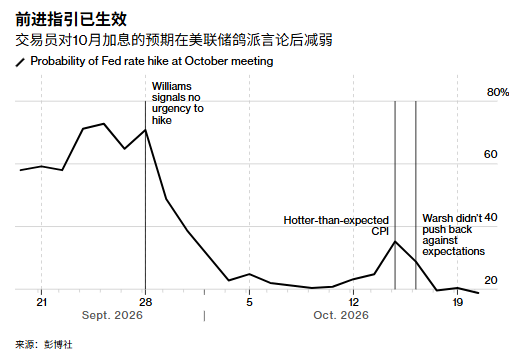
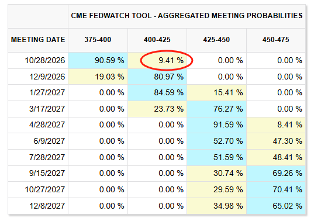
背景与关键数据
- 前瞻指引（Forward Guidance）：央行事先告诉市场未来利率大概怎么走，比如"会在较长时间内维持低利率"。好处是减少意外、平滑市场；坏处是央行容易被自己的话"绑住"。沃什长期批评美联储过度依赖前瞻指引和"数据依赖"式的频繁表态，上任后想减少这类信号。
- 利率互换定价的概率：交易员通过隔夜指数掉期（OIS）或联邦基金期货对未来利率下注，从价格里可以反推出"市场认为加息的概率"。概率低于 15%，意思是绝大多数资金认为 10 月不会动。
- 背景：今年的讨论方向是"加不加息"而不是"降不降息"，说明通胀压力不小（帖 7 显示今年大宗商品涨了 52.5%）。
- 两个数据源略有差异：彭博用利率互换算出"低于 15%"，第二张图里 CME FedWatch 用联邦基金期货算出 9.41%。口径不同，但方向一致：10 月大概率按兵不动。
图片解读
- 图 1（彭博）《前进指引已生效：交易员对 10 月加息的预期在美联储鸽派言论后减弱》：横轴是 2026 年 9 月 21 日到 10 月 19 日左右，纵轴是 10 月会议加息的概率（20%–80%）。
- 9 月下旬概率在 58%–72% 之间，9 月 28 日前后约 70%；
- 标注"Williams signals no urgency to hike"（纽约联储主席威廉姆斯表示加息不急）之后，概率一周内暴跌到 20% 左右；
- 10 月中旬"Hotter-than-expected CPI"（CPI 高于预期）让概率反弹到约 35%；
- 随后"Warsh didn't push back against expectations"（沃什没有反驳市场预期），概率再次回落，最新约 17%。
- 这张图说明：主席不给指引，但副手们的讲话照样能左右市场。
- 图 2（CME FedWatch 会议概率表）：每行是一次议息会议，每列是一个利率区间。
- 10/28/2026：90.59% 维持在 3.75%–4.00%，9.41% 加息到 4.00%–4.25%（红圈处）；
- 12/9/2026：80.97% 落在 4.00%–4.25%，即市场认为 12 月大概率加息一次；
- 2027 年 3 月约 76% 在 4.25%–4.50%（两次加息）；2027 年 9 月约 69% 在 4.50%–4.75%（三次加息）。
- 也就是说，10 月不加 ≠ 不加。市场只是把加息往后挪了，未来一年仍预期累计加息约 75 个基点。
为什么重要 / 对市场和经济的含义
- 对债市和美元：加息周期还没结束，短端利率有支撑；10 月"暂停"会让市场短暂松一口气，但 12 月仍是关键时点。
- 对股市：加息预期降温通常利好估值高的成长股，但整条利率路径仍向上，估值压力并没有消失。
- 对美联储沟通方式：这是"沃什时代"的一次实验。主席想少说话，但市场还是需要信号，于是由其他官员来提供。以后要更留意地区联储主席（如威廉姆斯）的讲话。
- Jason 选这两张图，大概是想说明：货币政策的"沟通"本身就是一种政策工具，沃什想弱化它，但很难做到。
延伸知识
- 从"Fed 不说话"到"Fed 说太多"：1994 年以前，美联储甚至不公开宣布利率决定，市场要靠观察公开市场操作去猜。2008 年后，伯南克把前瞻指引变成正式工具（"至少维持低利率到 2015 年年中"）。沃什的思路某种程度上是"回到少说话"，代价是市场波动可能更大。
- 怎么从期货价格算加息概率（简化版）：假设现在利率 3.875%（区间中值），期货隐含会后利率 3.90%，加息一次是 +25bp，那么概率 ≈ (3.90 − 3.875) ÷ 0.25 = 10%。FedWatch 就是用这个原理算出来的。
帖 3 · zerohedge：巴西大选决选前，博索纳罗的领先优势在缩小（美西 10-25 12:46）
巴西大选决选当天，右翼候选人弗拉维奥·博索纳罗在民调里的领先已经缩小到误差范围内，预测市场仍给他约八成胜率。这条帖子发出几小时后，结果出来了：卢拉逆转（见帖 12）。读全文收起
帖子原文
（要点转述）zerohedge：巴西大选竞争白热化。首轮之后的民调显示，保守派博索纳罗（图中为弗拉维奥·博索纳罗）在 10 月 25 日决选中领先现任总统卢拉 4–5 个百分点，之后领先收窄到 0–2.5 个点；预测市场仍偏向博索纳罗，但把握已不如首轮刚结束时。#其他国家经济#
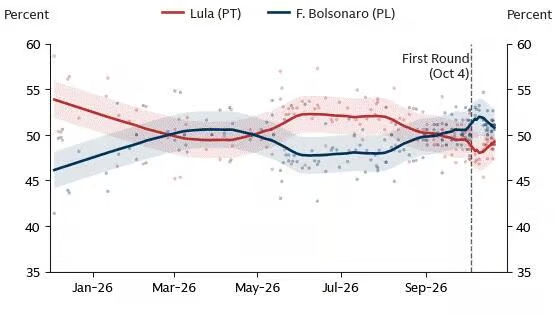
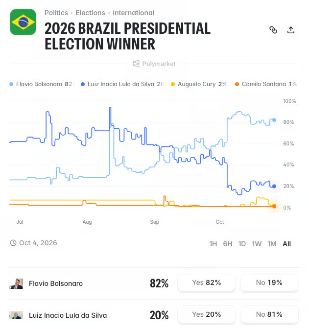
背景与关键数据
- 这里的"博索纳罗"是谁：图里写的是 F. Bolsonaro（弗拉维奥·博索纳罗，自由党 PL），是前总统雅伊尔·博索纳罗的长子、参议员。老博索纳罗已被判刑并被剥夺参选资格，由儿子代表右翼出战。
- 两轮投票制：巴西总统选举第一轮如果没人过半，得票前两名在第二轮（决选）对决。今年第一轮是 10 月 4 日，决选是 10 月 25 日。
- 民调领先缩小：第一轮后弗拉维奥领先 4–5 个百分点，之后缩小到 0–2.5 个百分点。一般民调的误差范围在 ±2 个百分点左右，所以已经接近"统计上打平"。
图片解读
- 图 1（民调汇总）：横轴 2026 年 1 月到 10 月，纵轴是两人对决时的支持率（%）。红线是卢拉（劳工党 PT），深蓝线是弗拉维奥·博索纳罗（PL），阴影是不确定区间，散点是单次民调。
- 年初卢拉明显领先（约 54% 对 46%）；3–5 月两人接近；6–8 月卢拉再领先（约 52% 对 48%）；9 月后再次交叉。
- 第一轮（10 月 4 日虚线）之后，弗拉维奥一度冲到约 52%、卢拉跌到约 48%；到图最右端两人收窄到约 51% 对 49%，阴影带大量重叠。
- 图 2（Polymarket 预测市场）：标题"2026 巴西总统选举获胜者"。浅蓝线是弗拉维奥，深蓝线是卢拉。
- 7–8 月卢拉多数时间在 60%–90% 之间；9 月两人来回拉锯；10 月第一轮后弗拉维奥跃升到约 85%–90%。
- 截图时弗拉维奥 82%，卢拉 20%（Yes/No 价格加总略超 100% 是买卖价差造成的）。其他候选人 Augusto Cury 2%、Camilo Santana 1%。
为什么重要 / 对市场和经济的含义
- 巴西金融市场（雷亚尔、国债、圣保罗股市 Ibovespa）在第一轮后已经押注"右翼胜选 → 财政纪律改善"，资产价格提前上涨。民调收窄意味着这笔押注的风险在上升。
- Jason 在开票前贴这条，等于给帖 12 埋了伏笔：预测市场给 80% 的事，有 20% 的概率不会发生。
延伸知识
- 怎么理解"80% 胜率"：80% 不是"一定会赢"，而是"同样的局面重演 10 次，大约输 2 次"。预测市场的价格是集体判断，校准度通常不错，但单次事件出现 20% 的结果一点也不罕见。可以类比天气预报：说 80% 下雨，结果没下，不代表预报错了。
- 选举交易（Election Trade）：新兴市场的选举常常是汇率和股市的大事件。投资者会提前按"更亲市场"的候选人胜选来定价；结果一旦反转，就会出现剧烈的"平仓"波动（见帖 12 的 ETF 盘中跌 16%）。
帖 4 · 论文：中国 18–24 岁年轻人"零生育意愿"从 5% 升到 32%（美西 10-25 13:00）
中国年轻人不生孩子，越来越不是"想生但生不起"，而是"本来就不想生"。2023 年 18–24 岁女性中有 46.8% 表示一个都不想要。读全文收起
帖子原文
（要点转述）论文《中国零生育意愿的兴起》用 2012–2023 年六轮中国综合社会调查（CGSS）研究 18–24 岁年轻人："完全不想要孩子"的比例从约 5% 升到 32%，2023 年年轻女性中接近一半如此表示。性别是最稳定的预测因素；年轻女性中城乡差异不显著，受过高等教育的女性零生育意愿更高。作者认为生育意愿本身的下降正在推高无子女比例，只靠减少生育障碍的鼓励政策可能有局限。#论文或书籍推荐#
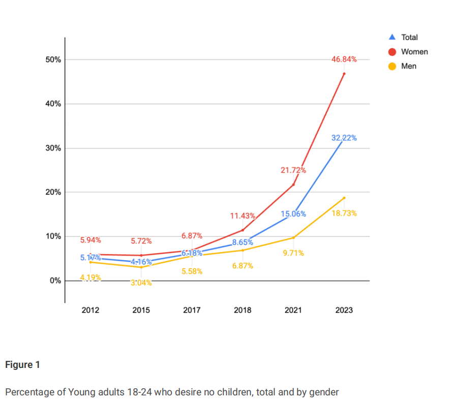
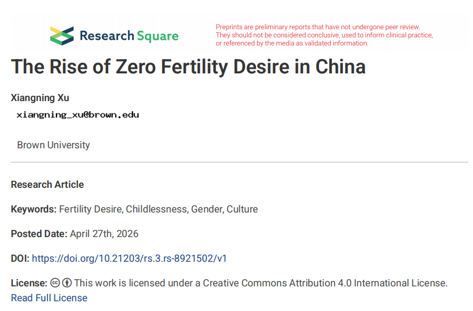
背景与关键数据
- "生不了"和"不想生"是两回事：传统解释认为，低生育率国家的人其实想要 2 个孩子，只是因为钱、房、工作等障碍没能实现（"意愿-行为差距"）。如果是这样，政策只要扫清障碍就能把生育率拉回来。但如果人们本来就不想要，发补贴、建托育就未必有效。
- 数据来源：CGSS（中国综合社会调查）是中国人民大学主持的全国性抽样调查，类似美国的 GSS。论文用 2012、2015、2017、2018、2021、2023 六轮数据，看 18–24 岁受访者中回答"理想子女数为 0"的比例。
- Logistic 回归、优势比：Logistic 回归用来分析"是/否"型结果（想不想要孩子）受哪些因素影响。优势比（Odds Ratio）> 1 表示该因素让"不想要"的可能性更高。论文发现：性别的影响最稳定；女性内部，城乡差别不显著，而受过高等教育的女性更倾向于不想生。
- 重要提醒：图片显示这是 Research Square 上的预印本（2026 年 4 月 27 日发布，作者是布朗大学的 Xiangning Xu），页面顶部写明"尚未经过同行评审"。另外，每轮调查里 18–24 岁的样本量通常只有几百人，单年数字的误差不小，看趋势比看具体百分点更可靠。
图片解读
- 图 1《18–24 岁年轻人中不想要孩子的比例（总体及分性别）》：横轴是调查年份，纵轴是比例。
年份 总体（蓝） 女性（红） 男性（黄） 2012 5.17% 5.94% 4.19% 2015 4.16% 5.72% 3.04% 2017 6.18% 6.87% 5.58% 2018 8.65% 11.43% 6.87% 2021 15.06% 21.72% 9.71% 2023 32.22% 46.84% 18.73% - 2012–2017 年基本平稳在 5% 左右，2018 年后开始加速，2021–2023 年翻倍式跳升。
- 男女差距从 2012 年不到 2 个百分点拉大到 2023 年的 28 个百分点，女性的转变远比男性剧烈。
- 图 2：论文首页截图，说明出处、作者和预印本性质。
为什么重要 / 对市场和经济的含义
- 对人口预测：18–24 岁正是未来 10 年的生育主力。如果近一半年轻女性不想生，未来的生育率可能比现在的悲观预测还要低。
- 对政策：中国目前的鼓励生育政策（育儿补贴、生育医疗费用减免、托育等）大多是"降低成本"型，论文认为这类政策对"不想生"的人作用有限。
- 对长期经济：劳动力供给、养老金、房地产需求、消费结构（母婴、教育）都会受影响。这是一个缓慢但确定的长期变量。
- Jason 把它和帖 5、帖 11 放在一起，组成"生育专题"：帖 4 讲意愿、帖 5 讲政策效果、帖 11 讲短期出生数。
延伸知识
- "低生育率陷阱"假说（Lutz 等人提出）：生育率一旦长期低于约 1.5，会通过三条渠道自我强化：① 人口学上，育龄人口越来越少；② 社会规范上，年轻人从小看到的都是少子家庭，理想子女数随之下降；③ 经济上，抚养成本和对生活水平的期望上升。这篇论文发现的"意愿下降"正是第二条渠道的证据。
- 对照韩国：韩国总和生育率在 2023 年跌到约 0.72，是全球最低。韩国的经验是：持续十几年、累计数百万亿韩元的补贴，没能扭转趋势。很多研究认为，原因在于性别观念、职场文化和教育竞争，而不只是钱。
帖 5 · OECD 论文：生育率高低，关键在于"工作和育儿能不能兼顾"（美西 10-25 13:10）
OECD 用 26 国 18 年的数据发现：发钱有用，但更关键的是让父母不必在工作和孩子之间二选一。托育服务的作用最独特；住房成本也有影响，但力度有限。读全文收起
帖子原文
（要点转述）OECD 论文用 2002–2019 年 26 个 OECD 国家的数据，研究就业、育儿假、托育、家庭补贴、住房支出和生育率的关系。结论是：关键不只是家庭有没有钱，而是能否在不牺牲经济安全、职业和生活质量的前提下养孩子；发钱和建立兼顾工作与育儿的制度不是一回事，托育还能帮父母协调就业。住房支出上升和生育率下降相关，但房价下跌未必带来生育回升；住房支出降 10%，总和生育率只升约 2%。#论文或书籍推荐#
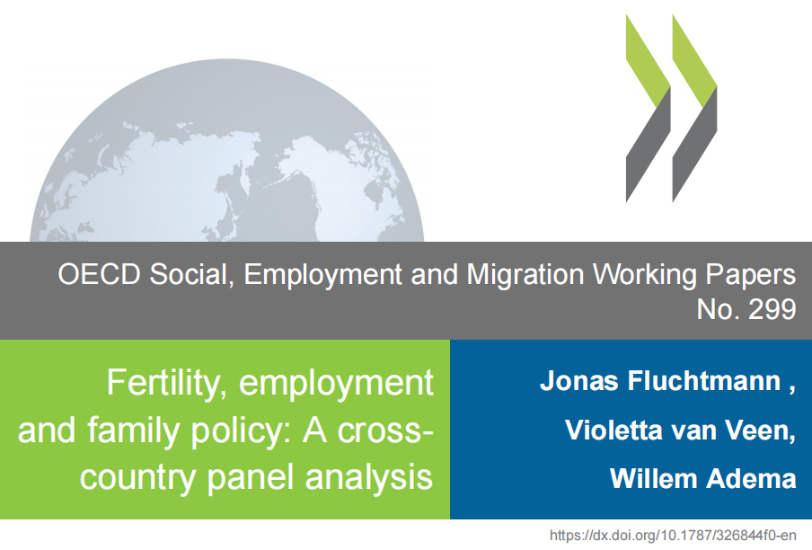
📎 本帖附 PDF：
326844f0-en.pdf（OECD 工作论文全文，未下载，解读基于帖子正文和封面）
背景与关键数据
- 论文信息：OECD《社会、就业与移民工作论文》第 299 号，题为《生育、就业与家庭政策：跨国面板分析》，作者 Jonas Fluchtmann、Violetta van Veen、Willem Adema。
- 面板分析：同时利用"多个国家 × 多个年份"的数据，可以控制各国固定不变的文化差异，只看同一国家内政策变化前后生育率怎么变，比单纯的跨国比较更可信。
- 三类政策的不同渠道：
- 育儿假补贴、家庭津贴：主要是"给钱"，缓解经济负担；
- 托育服务：除了省钱，还有一条独特渠道，就是让父母（尤其是母亲）能继续工作，不用为孩子牺牲职业。
- 住房的弹性：住房支出减少 10%，总和生育率只提高 2%（注意是"相对 2%"，比如从 1.50 到 1.53，不是加 2 个百分点）。说明房价有影响，但光靠降房价远远不够。
- 房价下跌 ≠ 生育回升：如果房价下跌是因为经济变差（收入预期下降、失业风险上升、家庭财富缩水），负面效应可能抵消"房子更便宜"的好处。这对正处于房价下行期的中国很有参考意义。
图片解读
- 封面图：OECD 工作论文封面，标明系列号 No. 299、标题和三位作者，说明这是 OECD 的研究论文。
为什么重要 / 对市场和经济的含义
- 对政策设计：钱要花在哪里，比花多少更重要。托育这类"制度型"投入，比一次性发钱更能对冲"生孩子 = 牺牲职业"的机会成本。
- 对中国的启示：中国 2025 年起实施每孩每年 3600 元的育儿补贴，属于"给钱"型。结合帖 4（意愿下降）和这篇论文，单靠补贴效果可能有限；托育供给、职场对育儿的包容度可能更关键。
- 对房地产的反思：房价下行带来的"住房负担改善"，在收入和就业预期不好的情况下，很难转化为生育率回升。
延伸知识
- 生育率和女性就业的"反转"：1970 年代，OECD 国家里女性就业率越高，生育率越低（工作和生孩子互相冲突）。到了 1990 年代以后，这个关系反转为正相关：北欧、法国女性就业率高、生育率也相对高；南欧、日本、韩国女性就业率较低，生育率反而最低。原因就是这篇论文说的"兼顾能力"：在制度完善的国家，女性不必二选一。
- 弹性（Elasticity）：经济学用"弹性"衡量一个变量对另一个变量有多敏感。这里"住房支出对生育率的弹性"约为 0.2（10% → 2%）。弹性小于 1 说明反应"不敏感"，就像药效温和，剂量加倍效果也只多一点。
帖 6 · Revelio Labs：全球呼叫中心就业十多年来首次萎缩（美西 10-25 13:20）
AI 对客服岗位的冲击已经能在数据里看到，但方式是"不再招新人"而不是"大规模裁员"。中国是唯一没出现这种分化的国家。读全文收起
帖子原文
（要点转述）Revelio Labs：全球呼叫中心就业在增长十多年后开始萎缩，主要因为招聘减少，而不是裁员激增。AI 普及后，12 个中等收入国家的呼叫中心就业开始落后于其他白领岗位，但还不能把下降全部归因于 AI；中国是明显的例外。#职业#
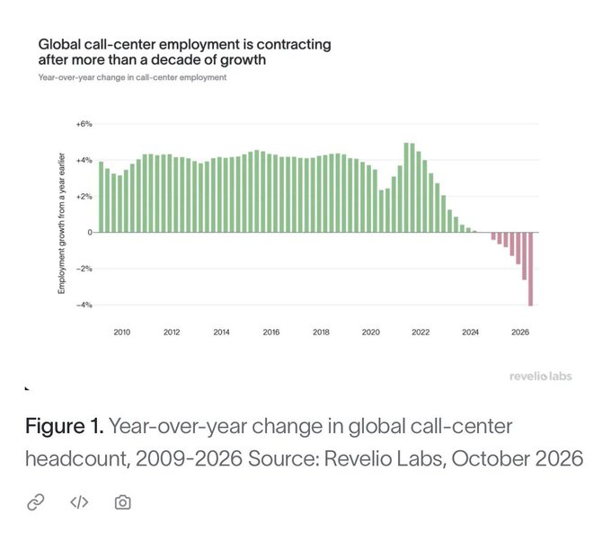
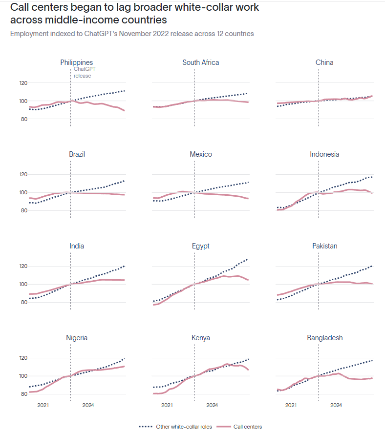
背景与关键数据
- Revelio Labs：一家劳动力数据公司，主要通过抓取公开职业档案（如 LinkedIn 简历）、招聘广告等统计各行业就业人数和流动。
- "招聘减少"而不是"裁员增加"：这是技术替代早期的典型形态。公司不一定开除现有员工，而是自然离职后不补人、新业务直接用 AI。所以失业率不会突然跳升，但年轻人和新入行者的机会在减少。
- 为什么是中等收入国家：菲律宾、印度等是全球客服外包（BPO）中心，菲律宾 IT-BPM 行业雇用约 180 万人。客服是最容易被大语言模型替代的白领工作之一，这些国家首当其冲。
- 为什么中国是例外：一种可能是中国的呼叫中心主要服务国内市场，而不是承接英语外包；另一种可能是数据本身，LinkedIn 等平台在中国覆盖率很低，Revelio 对中国的统计未必可靠。
图片解读
- 图 1《全球呼叫中心就业在十多年增长后开始收缩》：横轴 2009–2026 年，纵轴是呼叫中心就业人数的同比增速。
- 2010–2019 年每年稳定增长约 +4%（绿色柱）；2020 年疫情时增速掉到约 +2.5%；2021–2022 年反弹到约 +5%（疫情期间线上服务需求暴增）；
- 2022 年底起增速快速下滑，2024 年降到接近 0；2025 年转负（红色柱），2026 年最新约 -4%，而且下跌在加速。
- 转折点和 ChatGPT 发布（2022 年 11 月）时间吻合。
- 图 2《中等收入国家呼叫中心就业开始落后于其他白领工作》：12 个国家的小图，把 2022 年 11 月 ChatGPT 发布时的就业人数设为 100。虚线是"其他白领岗位"，粉色实线是"呼叫中心"。
- ChatGPT 发布前，两条线基本同步上升；发布后几乎所有国家都出现了"剪刀差"：其他白领继续涨，呼叫中心走平或下降。
- 差距最大的是菲律宾（呼叫中心约 89，其他白领约 111）、墨西哥（约 93 对 111）、巴西（约 97 对 113）、孟加拉（约 97 对 117）、埃及（约 105 对 127）；
- 中国两条线几乎重合（都在约 105），是唯一的例外。
为什么重要 / 对市场和经济的含义
- 对新兴市场：菲律宾、印度等国的服务出口和外汇收入很大一部分来自 BPO 行业，AI 替代可能削弱它们的增长引擎和中产阶级扩张。
- 对 AI 投资逻辑：这是 AI"降本"已经落地的少数硬证据之一。企业客服、销售支持等场景是 AI 最先变现的领域。
- 对劳动力市场：冲击首先体现在"入口"（招聘冻结）而非"出口"（裁员），所以宏观失业率可能滞后反应。这与麦肯锡报告（帖 10）里"约 1100 万人需要转行"相呼应。
延伸知识
- 双重差分（Difference-in-Differences）思路：图 2 的设计就是这个方法的直观版。只看呼叫中心就业下降，可能是经济不好；但如果同一国家的其他白领在涨、只有呼叫中心在跌，就更能说明是行业特有的冲击（比如 AI）。这正是经济学家识别因果关系的常用方法。不过 Revelio 也很谨慎，说"还不能全部归因于 AI"。
- 任务替代 vs 岗位替代：AI 一般先替代"任务"（回答常见问题、查订单），再逐步减少"岗位"。当一个岗位里大部分任务都能被自动化时，岗位数量才会明显下降，客服正是这种高度标准化的工作。
帖 7 · Charlie Bilello：2011–2026 年美元资产历年收益表（美西 10-25 13:21）
2026 年至今，大宗商品（+52.5%）大幅领先，美国价值股和纳指也不错；黄金（-7.5%）和比特币（-7.3%）垫底，长期国债也在亏钱。读全文收起
帖子原文
（要点转述）Charlie Bilello 更新了美元资产历年收益表。#金融#
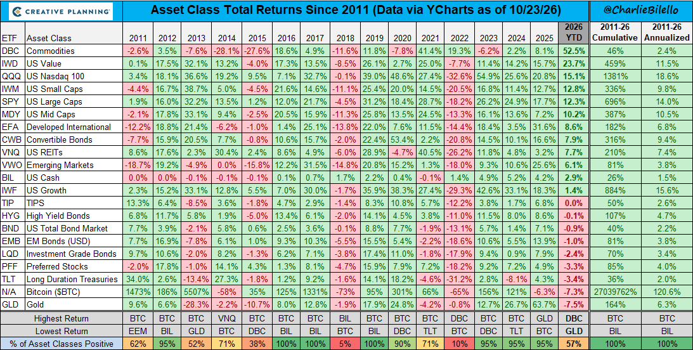
背景与关键数据
- 作者：Charlie Bilello 是 Creative Planning 的首席市场策略师，这张"资产类别年度收益周期表"是他的招牌图，每年更新。数据截至 2026 年 10 月 23 日。
- 每一行用一只 ETF 代表一类资产：DBC（大宗商品）、IWD（美国价值股）、QQQ（纳指 100）、IWM（小盘股）、SPY（标普 500）、EFA（发达市场）、VWO（新兴市场）、BIL（现金/短期国债）、TLT（长期国债）、GLD（黄金）、BTC（比特币）等。
- 累计 vs 年化：最右边两列分别是 2011–2026 年的累计收益和年化收益。年化收益是"每年平均复利多少"，更适合比较。
图片解读
- 2026 年迄今（加粗列），从高到低：
- 大宗商品 DBC +52.5%（遥遥领先），美国价值股 IWD +23.7%，纳指 QQQ +15.1%，小盘股 IWM +12.8%，标普 SPY +12.3%，中盘股 MDY +10.2%，发达市场 EFA +8.6%，可转债 +7.9%，REITs +7.7%，新兴市场 +6.1%，现金 BIL +2.9%，美国成长股 IWF 只有 +1.4%；
- 通胀保值债 TIPS 0.0%，高收益债 -0.1%，总体债券 -0.9%，新兴市场美元债 -1.0%，投资级公司债 -2.4%，优先股 -3.3%，长期国债 TLT -3.4%，比特币 -7.3%，黄金 -7.5%（垫底）。
- 今年 21 类资产中只有 57% 是正收益（底行），是 2022 年（10%）以来最差的一年。
- 历史对比：
- 黄金 2025 年 +63.7%（当年第一），2026 年转为倒数第一，典型的"均值回归"；
- 比特币 2011–2026 年年化 120.6%，但年度波动极大（2013 年 +5507%，2018 年 -73%，2022 年 -65%）；
- 长期年化收益：纳指 18.6%、美国成长股 15.6%、标普 14.0%，现金只有 1.5%。
为什么重要 / 对市场和经济的含义
- 大宗商品暴涨 + 长期国债下跌 = 通胀交易。这和帖 2"美联储讨论加息"是同一个故事：通胀压力迫使利率上行，债券价格下跌，实物资产走强。前几天 Jason 也贴过中东冲突推高油价的分析，这可能是大宗商品领涨的主要推手。
- 价值股（+23.7%）大幅跑赢成长股（+1.4%）：利率上行环境里，未来现金流折现值高的成长股受压，能源、金融、工业等价值股受益。
- 黄金"不避险"：延续了前一天 FT 文章里讨论的背离。黄金在 2025 年大涨后进入获利回吐阶段，加上加息预期，失去了上涨动力。
延伸知识
- "周期表"告诉我们什么：这张表最重要的教训是每年的冠军都在换，去年第一（黄金）今年可能垫底。没人能稳定预测下一年谁领先，所以分散配置、定期再平衡更重要。就像足球联赛，冠军很少能卫冕，押注"去年冠军"往往吃亏。
- 股债"负相关"失效：传统 60/40 组合（60% 股票 + 40% 债券）依赖"股票跌时债券涨"。但在通胀主导的年份（2022、2026），股债可能同时承压，因为两者都被"利率上升"压制。这时商品、现金才是真正的分散工具。
帖 8 · 买一套房要多少年工资？六个地区 1985–2025 年对比（美西 10-25 13:24）
2025 年在香港买一套典型住房要 20.4 年全职工资，台湾 17.5 年，加拿大 11.4 年，澳大利亚 9.4 年，英国 6.7 年，美国只要 6.4 年。读全文收起
帖子原文
（要点转述）reddit 上的一张图：1985–2025 年，买一套典型住房需要多少年的全职工资。#房价#
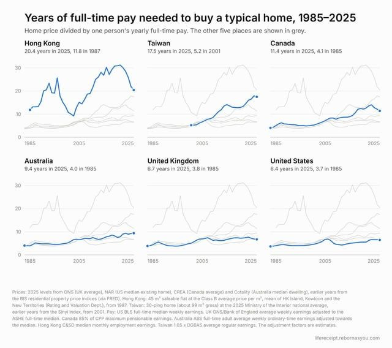
背景与关键数据
- 指标：房价 ÷ 一个人一年的全职工资。注意是一个人的工资，不是家庭收入，所以数字会比常见的"房价收入比"（按家庭收入算）更高。
- "典型住房"的定义各地不同（图底注释）：
- 香港：45 平方米实用面积、B 类单位平均价格；
- 台湾：30 坪（约 99 平方米建筑面积，含公设）；
- 美国：NAR 二手房中位数；英国：ONS 平均房价；加拿大：CREA 平均价；澳大利亚：Cotality 中位数。
- 因此跨地区对比要谨慎，比如香港的"一套房"面积不到台湾的一半。
图片解读
- 六个小图，每个图里蓝线是该地区，灰线是其他五个地区作对照。横轴 1985–2025 年，纵轴是"年数"。
- 香港：1987 年 11.8 年 → 1997 年泡沫期约 25 年 → 2003 年 SARS 后跌到约 9 年 → 2021 年前后见顶约 31 年 → 2025 年回落到 20.4 年（过去几年香港房价下跌约三成）。
- 台湾：2001 年 5.2 年 → 2025 年 17.5 年，一路上涨，且是目前仍在创新高的地区。
- 加拿大：1985 年 4.1 年 → 2022 年前后约 14 年见顶 → 2025 年 11.4 年。
- 澳大利亚：1985 年 4.0 年 → 2025 年 9.4 年，稳步上升。
- 英国：1985 年 3.8 年 → 2025 年 6.7 年，2007 年后基本横盘。
- 美国：1985 年 3.7 年 → 2006 年泡沫顶约 7 年 → 2012 年回落到约 5 年 → 2025 年 6.4 年，六个地区中最"便宜"。
为什么重要 / 对市场和经济的含义
- 和生育的联系：结合帖 5（住房支出与生育率负相关），台湾、香港生育率全球最低，房价负担也最重，这不是巧合。
- 对房地产周期：香港是唯一明显"去泡沫"的地区，可负担性从 31 年改善到 20 年，但仍远高于其他地区。台湾和澳大利亚仍在上行，风险在积累。
- 美国看起来"便宜"，但这张图没计入利率。美国 30 年房贷利率从 3% 升到 6%–7% 后，实际月供负担大幅上升，这是美国"可负担性危机"的真正来源。
延伸知识
- 房价收入比 vs 月供收入比：房价收入比只看价格，月供收入比还考虑了利率。同样 100 万的房子，利率 3% 时 30 年月供约 4200 元，利率 7% 时约 6650 元，贵了近 60%。所以利率低的地区（如过去的香港、台湾），房价收入比可以长期维持高位；利率一旦上升，高房价收入比就难以为继。
- 为什么香港、台湾这么贵：土地供给受限（香港可开发土地少、政府控制供地）、长期低利率（香港联系汇率下跟随美国利率）、资产保值需求和外来资金。经济学里叫"供给缺乏弹性"：需求增加时，房子盖不出来，只能涨价。
帖 9 · GMI：日本投资者连续 5 周卖出海外债券，资金回流本国（美西 10-25 13:28）
日本国债收益率今年大涨 80 多个基点，日本投资者开始卖出海外债券、把钱调回国内。全球最大的海外资金来源之一正在"回家"。读全文收起
帖子原文
（要点转述）GMI：过去 5 周日本投资者累计净卖出 3.43 万亿日元（约 219 亿美元）海外长期债券，是 4 年来最长的连续净卖出；2026 年迄今累计净卖出 5.18 万亿日元，为 2022 年以来同期最大。日本 10 年期国债收益率今年上升超过 80 个基点，本国债券更有吸引力；同时外国投资者连续三周净买入日本长债。#金融#
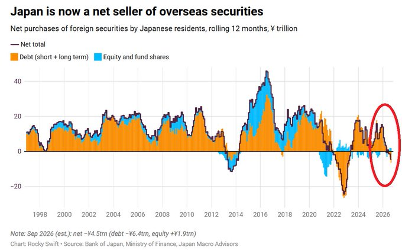
背景与关键数据
- 为什么重要：日本是全球最大的净债权国。过去二十多年日本国内利率接近零，寿险公司、养老金、银行只能大量购买美国国债、欧洲债券来获取收益。日本投资者是美国国债最大的海外持有者（约 1.1 万亿美元以上）。
- 逻辑链：日本 10 年期国债收益率上升 → 在国内就能拿到不错的收益 → 再考虑汇率对冲成本后，买美债的"超额收益"消失甚至为负 → 卖出海外债券、资金回流。
- 对冲成本：日本机构买美债通常要对冲汇率风险，对冲成本约等于两国短期利率差。美国短端利率仍比日本高好几个百分点，所以"对冲后的美债收益"往往还不如日本国债。
- 数字：过去 5 周净卖出 3.43 万亿日元（约 219 亿美元），4 年来最长的连续卖出；今年累计净卖出 5.18 万亿日元（约 330 亿美元），2022 年以来最多。同时外国投资者连续 3 周净买入日本国债，说明日债收益率已经高到能吸引外资了。
图片解读
- 图《日本现在是海外证券的净卖家》：日本居民对外国证券的滚动 12 个月净购买额（万亿日元）。橙色是债券，蓝色是股票和基金，深紫色线是合计。
- 1998–2012 年基本是净买入，每年约 10–25 万亿日元，主要是买债券（橙色）；
- 2016 年达到峰值约 45 万亿日元（日本央行实施负利率后，资金大举流向海外）；
- 2022 年深度负值，约 -25 万亿日元（美联储暴力加息导致对冲成本飙升、美债暴跌，日本机构大量抛售）；
- 2024 年回升到约 +18 万亿日元；
- **2025–2026 年（红圈处）**快速下滑，最新已转为负值。图注：2026 年 9 月（估算）净卖出 4.5 万亿日元，其中债券 -6.4 万亿、股票 +1.9 万亿，也就是卖债为主，股票还在小幅买入。
为什么重要 / 对市场和经济的含义
- 对美债和全球利率：日本是美债的"边际买家"之一。如果日本资金持续撤出，美国、欧洲、澳大利亚的长期利率都会面临上行压力，这和帖 7 里长期国债 TLT 今年 -3.4% 一致。
- 对日元：资金回流意味着卖外币、买日元，长期看对日元是支撑。
- 对全球资产：过去十年"日本低息资金买遍全球"的格局在松动。日本国内利率正常化，是全球流动性的一个慢变量。
延伸知识
- 日元套利交易（Yen Carry Trade）：过去全球投资者借入几乎零利率的日元，换成美元买高收益资产，赚利差。日本利率上升会让这笔交易变贵，可能引发集中平仓。2024 年 8 月日本央行加息后全球股市急跌，就是一次套利交易平仓的小型预演。
- "渡边太太"（Mrs. Watanabe）：指日本散户投资者，她们曾大量投资高息外币资产（澳元、新西兰元、巴西雷亚尔等）。日本资金的流向一直是外汇市场的重要力量。
帖 10 · 麦肯锡：到 2035 年美国约 1100 万人需要转行，85% 的增长岗位要求证书（美西 10-25 13:38）
未来十年美国总体不缺工作（净增约 500 万个岗位），问题是"消失的工作"和"新增的工作"不属于同一批人：低薪岗位在萎缩，高薪岗位在增长，中间隔着技能和证书的门槛。读全文收起
帖子原文
（要点转述）麦肯锡：一个经济体可以同时有大量新岗位和大量失业，因为消失和新增的工作不属于同一批人。基准情景下，到 2035 年美国劳动需求净增约 500 万个全职岗位，但约 1100 万人需要转行，七成以上劳动者需要更新技能；增长的岗位集中在高薪的医疗、建筑、管理，萎缩的集中在低薪的行政、零售、运输；只有约七分之一的劳动者有直接进入增长职业的路径，约 85% 的增长岗位要求证书。#职业#
📎 本帖附 PDF：
workforce-in-motion-skills-and-pathways-to-future-jobs-in-the-united-states.pdf（麦肯锡全球研究院报告全文，未下载，解读基于帖子正文和封面）
背景与关键数据
- 报告：麦肯锡全球研究院《Workforce in Motion：美国未来就业的技能与路径》，作者包括 María Jesús Ramírez、Kweilin Ellingrud 等。
- 全职等价岗位（FTE）：把兼职折算成全职来统计，比如两个半职算一个 FTE，便于比较劳动需求的总量。
- 关键数字：
- 到 2035 年净增约 500 万个 FTE 岗位，但约 1100 万人需要换职业（自动化情景不同，范围 600 万–1600 万）；
- 70% 以上的劳动者即使不换工作，也要更新部分技能；
- 增长的需求约 60% 集中在工资最高的 40% 岗位（医疗、建筑、管理）；萎缩的需求 70% 以上集中在工资最低的 40% 岗位（行政、零售、运输物流）；
- 只有约 1/7 的劳动者有"直接通道"进入增长职业；85% 的增长岗位要求资格证书或认证；
- 2022 年以来，招聘对 AI 熟练度的需求增长 11 倍，对适应能力增长 5 倍，对韧性、好奇心、学习意愿增长约 3 倍。
图片解读
- 封面图：麦肯锡全球研究院报告封面，标题"Workforce in motion"，副标题"美国未来就业的技能与路径"，画面是不同职业的人走在向上的箭头上，寓意"职业转换路径"。
为什么重要 / 对市场和经济的含义
- 结构性失业：报告第一句"一个经济体可以同时存在大量新增岗位和大量失业"就是"结构性失业"的定义。宏观上岗位够，微观上人岗不匹配。
- 收入差距扩大：低薪岗位萎缩、高薪岗位增长，又有证书门槛，结果可能是中低收入者被挤出，收入分化加剧（和前一天的 NBER 论文"AI 拉大劳动者与资本所有者差距"相呼应）。
- 对投资：医疗、建筑（含数据中心和电网建设）、职业培训和认证类业务是结构性受益方向。
- 与帖 6 连起来看：呼叫中心是"萎缩岗位"的典型代表，Revelio 的数据是麦肯锡预测正在发生的实证。
延伸知识
- 贝弗里奇曲线（Beveridge Curve）：横轴是失业率，纵轴是职位空缺率。正常情况下两者此消彼长。如果曲线整体向外移动，即"空缺多、失业也多"同时出现，就说明人岗匹配效率在下降，也就是结构性问题。2021–2022 年美国就出现过这种外移。
- 就业极化（Job Polarization）：MIT 经济学家 David Autor 发现，过去几十年自动化主要替代"中等技能、重复性"的工作（如流水线、文员），导致就业向高技能和低技能两端集中。AI 的不同之处在于，它也开始替代部分白领认知型工作，冲击可能更广。
帖 11 · 何亚福：2026 年中国出生人口三种情景，750 万–800 万（美西 10-25 14:11）
人口学者何亚福认为，2025 年结婚人数回升是一次性因素造成的，不代表婚育意愿好转。2026 年出生人口乐观约 800 万+，中性约 790 万（和 2025 年持平），悲观可能降到 750 万。读全文收起
帖子原文
（要点转述）何亚福：关于 2026 年出生人口的预测，分三种情景（详见截图）。#人口#
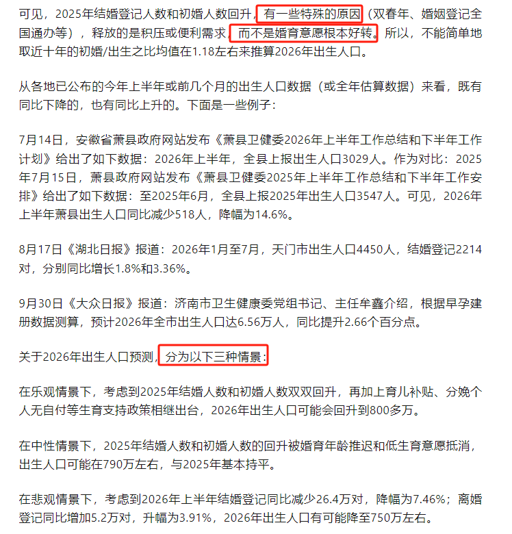
背景与关键数据
（以下内容来自帖子配图，即何亚福文章截图）
- 2025 年结婚为什么回升：有一些特殊原因，比如"双春年"（农历乙巳年有两个立春，民间认为适合结婚）和婚姻登记全国通办（2025 年 5 月起可以在任何地方登记，不必回户籍地）。这些释放的是"积压需求或便利需求"，不是婚育意愿根本好转。所以不能简单地用过去十年初婚与出生的经验比例（均值约 1.18）来推算 2026 年出生人口。
- 各地数据有升有降：
- 安徽萧县：2026 年上半年出生 3029 人，2025 年同期 3547 人，减少 14.6%；
- 湖北天门：2026 年 1–7 月出生 4450 人、结婚登记 2214 对，分别增长 1.8% 和 3.36%；
- 山东济南：根据早孕建册数据，预计 2026 年全市出生 6.56 万人，同比提升 2.66%。
- 三种情景：
- 乐观：2025 年结婚和初婚双双回升，加上育儿补贴、分娩个人无自付等政策，2026 年出生人口可能回升到 800 多万；
- 中性：结婚回升的效果被婚育年龄推迟和低生育意愿抵消，约 790 万，与 2025 年基本持平；
- 悲观：2026 年上半年结婚登记同比减少 26.4 万对（-7.46%），离婚登记增加 5.2 万对（+3.91%），出生人口可能降到 750 万左右。
图片解读
- 配图是何亚福文章截图，红框标出三个重点："有一些特殊的原因""而不是婚育意愿根本好转""分为以下三种情景"。作者的基本判断偏谨慎：去年的结婚回升是"补偿性"的，今年上半年结婚登记又转为下降。
为什么重要 / 对市场和经济的含义
- 与帖 4 呼应：帖 4 说年轻人"不想生"的比例在飙升，这里的悲观情景（结婚减少、离婚增加）就是这种趋势在数据上的表现。
- 对相关行业：出生人口直接决定母婴用品、奶粉、妇产医院、幼儿园、早教等行业的需求，几年后传导到小学、中学。750 万和 800 万差了 6% 以上，对这些行业的规模影响不小。
- 数据观察要点：结婚到生育一般有 1–2 年的滞后，结婚登记是出生人口的领先指标。2026 年上半年结婚登记下降 7.46%，对 2027 年的出生数是负面信号。
延伸知识
- "丙午年"效应：2026 年是农历丙午年（火马年）。日本有"丙午年出生的女孩性格刚烈、克夫"的迷信，1966 年（上一个丙午年）日本出生人口从约 182 万骤降到约 136 万，降幅约 25%，第二年又反弹回来。这是文化因素影响生育时点的经典案例。中国没有那么强的丙午禁忌，但"双春年""无春年""属相偏好"等说法确实会让结婚和生育在年份之间挪动，造成数据锯齿。
- 先行指标思维：宏观分析常用"领先指标"预判未来，比如结婚登记领先出生人口、早孕建册领先出生数（约 7–8 个月）、建筑许可领先房屋开工。济南用"早孕建册"数据预测全年出生数，就是这种思路。
帖 12 · 彭博：卢拉逆转胜选，巴西市场准备迎接动荡（美西 10-25 20:17）
卢拉以 51.8% 对 48.2% 逆转击败弗拉维奥·博索纳罗，创下巴西历史上首个总统第四任期的纪录。市场原本押右翼胜选，现在要"重新定价"，一只日本上市的巴西 ETF 盘中一度跌 16%。读全文收起
帖子原文
（要点转述）彭博：卢拉逆转胜选，交易员准备迎接周一巴西市场的波动，一只日本上市的巴西股票 ETF 盘中最多跌 16%。但卢拉 2027 年将面对明显右倾的国会：右翼和保守派在两院都占多数，博索纳罗阵营的自由党是两院第一大党，财政改革和预算推进会更难；中间派仍是关键的协调力量；右翼席位还不够弹劾所需的三分之二。#其他国家经济#
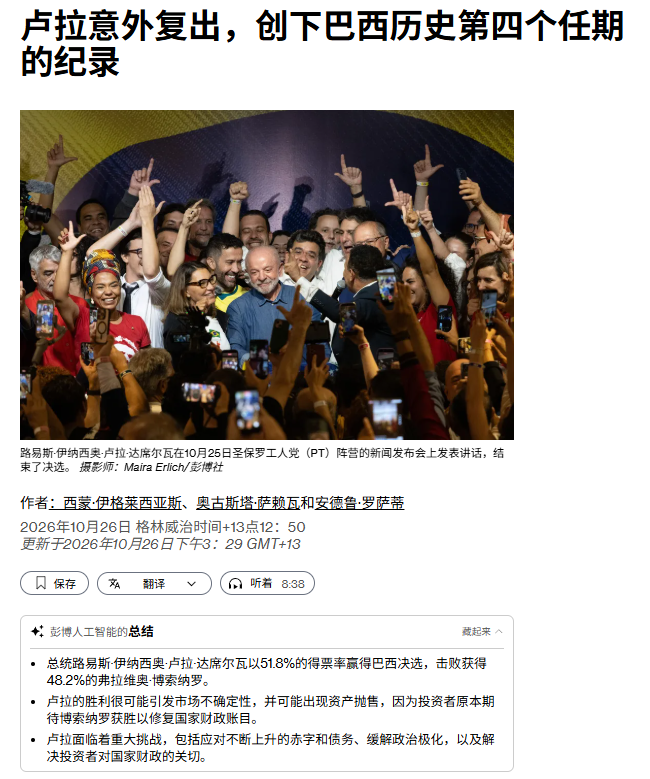
背景与关键数据
- 结果：卢拉（劳工党 PT）得票率 51.8%，弗拉维奥·博索纳罗（自由党 PL）48.2%。卢拉曾在 2003–2010 年连任两届，2023 年再度上台，这次是第四个任期（2027–2030 年），就任时 81 岁。
- 为什么日本 ETF 先跌：选举在周日，巴西市场周一才开盘，而日本周一早上就开盘了。东京上市的巴西股票 ETF 成为第一个"出价"的地方，盘中最多跌 16%。
- 市场为什么不喜欢卢拉连任：彭博 AI 总结提到，投资者原本期待博索纳罗获胜后修复巴西财政账目。卢拉政府倾向扩大社会支出，巴西财政赤字和政府债务持续上升（总债务占 GDP 约八成），市场担心财政纪律。
- 国会右倾：右翼和保守派在众议院、参议院都占多数，自由党是两院第一大党。卢拉推财政、预算议程需要更多谈判。巴西政治里有一个松散的"中间派"（Centrão，以利益交换为主的中间政党群），往往是关键的摇摆力量。
- 弹劾门槛：巴西弹劾总统需要众议院 2/3 票数（513 席中的 342 席）启动、参议院 2/3 票数定罪。2016 年罗塞夫（卢拉的继任者）就是被这样弹劾下台的。右翼目前"占多数但不到 2/3"，有压力，但不足以单独完成弹劾。
图片解读
- 彭博报道截图：标题"卢拉意外复出，创下巴西历史第四个任期的纪录"，配图是卢拉 10 月 25 日在圣保罗劳工党新闻发布会上与支持者庆祝。
- 彭博 AI 总结三点：① 卢拉 51.8% 胜出，击败获得 48.2% 的弗拉维奥·博索纳罗；② 卢拉胜选可能引发市场不确定性和资产抛售，因为投资者原本期待博索纳罗获胜后修复财政账目；③ 卢拉面临重大挑战：不断上升的赤字和债务、政治极化、投资者对国家财政的关切。
为什么重要 / 对市场和经济的含义
- "选举交易"反转：第一轮后，资金押注右翼胜选，买入巴西股票、雷亚尔和国债。卢拉逆转后这部分押注要平仓，短期内雷亚尔、Ibovespa 指数、巴西国债可能同时承压，信用违约掉期（CDS）可能走阔。
- 中期看国会：卢拉赢了总统，但国会被右翼掌控，"分裂政府"反而可能起到制衡作用。激进的财政扩张很难通过，这能缓和市场的部分担忧。
- 对新兴市场整体：巴西是拉美最大经济体，是大豆、铁矿石、原油的重要出口国。巴西资产波动会影响拉美情绪和部分大宗商品的风险溢价。
- 与帖 3 合起来看：开票前预测市场给弗拉维奥 82%，结果卢拉胜出。这提醒我们：定价已经充分的"共识"，一旦被打破，市场反应会特别剧烈。
延伸知识
- 政治风险溢价：新兴市场国家的资产（汇率、国债收益率）里含有一部分"政治风险补偿"。政策可预期性越低，投资者要求的回报越高。巴西长期维持两位数的基准利率（Selic 在 2025 年一度升到 15%），既是为了压通胀，也反映了财政和政治风险溢价。
- 财政主导（Fiscal Dominance）：当政府债务高到一定程度，央行加息反而会推高利息支出、恶化财政，货币政策就被财政"绑架"了。巴西是经常被拿来讨论"财政主导风险"的新兴市场，这也是市场对卢拉扩张性财政格外敏感的原因。
帖 13 · 高盛：中国地产下行进入第六年，比预期更深；全国房产税或在"十五五"后期扩围（美西 10-26 13:40）
中国地产这一轮下行比高盛年初想的更深：多数指标已比高点跌掉六到八成，全国房价要到 2030 年才见底，土地财政的缺口最终可能要靠房产税来补。读全文收起
帖子原文
（要点转述）高盛说，中国地产下行已到第六年，2026 年前九个月的数据明显差于它的预期。截至 9 月，多数地产活动指标比 2020–21 年高点少了 60%–90%；即使需求不再恶化，融资模式的变化也会继续压低地产投资。高盛估算住房财富效应系数约 0.01：400 万亿元住房财富若普遍跌 5%，年消费约少 2000 亿元，这种拖累在 2024–25 年最大。高盛预计全国二手房价 2030 年见底，沪深等低库存一线城市可能较快恢复，高库存的低线城市还要跌几年；为弥补土地收入缺口，全国房产税扩围可能放在"十五五"后期或"十六五"期间。#房价#
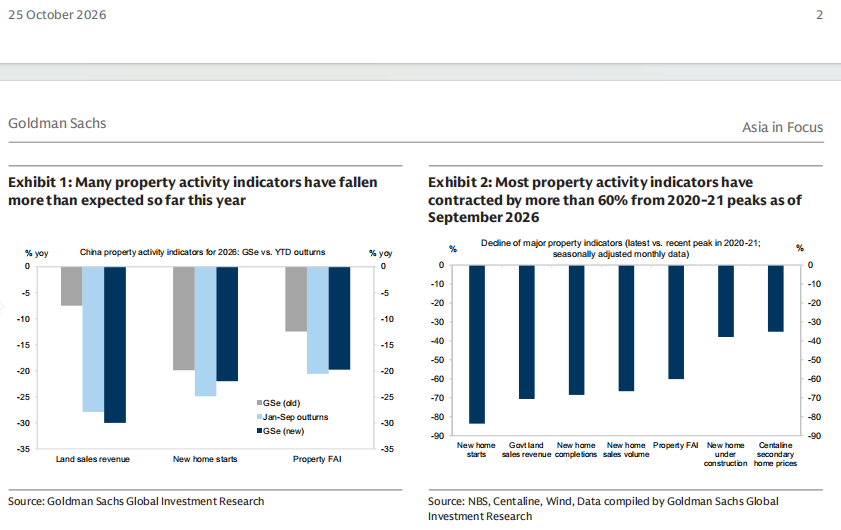
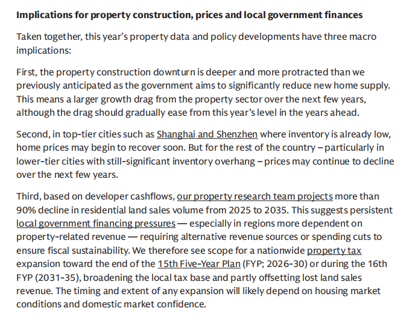
背景与关键数据
- 跌了多少：新开工、土地出让、竣工、销量这些"流量"指标普遍比 2020–21 年高点少了六到八成，而"价格"跌得少得多，中原二手房价格指数约 -35%。这是地产调整的典型顺序：先量后价。卖家宁可不卖也不愿降价（价格粘性），成交先冻住，价格再慢慢往下走。
- "融资模式改变"指什么：过去开发商靠预售制筹钱，房子没盖好就卖楼花，用购房者的首付和按揭去拿地、盖下一批，等于购房者给开发商提供了一笔无息贷款。近年各地推现房销售、严管预售资金，这条"免费融资"管道变窄了。所以就算需求不再变差，能投进去的钱也会变少。
- 财富效应 0.01 怎么理解：家里房子市值涨 100 万元，一年大约多花 1 万元。这个系数比美国低（美国研究的常见估计在 0.03–0.05），原因之一是中国家庭很少拿房子做"房屋净值贷款"套现消费，房子更像一个存钱罐。
- 2000 亿元是什么量级：中国 GDP 约 140 万亿元，2000 亿约占 0.15%。也就是说房价每跌 5%，光财富效应就让 GDP 少约 0.15 个百分点，地产投资和土地财政的直接拖累还没算进去。
- 高盛改了什么预测：见图 1。土地出让收入、新开工、地产投资三项全年预测都大幅下调，新预测基本贴着 1–9 月的实际值。
图片解读
- 图 1 左（Exhibit 1）：三组柱子是土地出让收入、新房开工、房地产开发投资（FAI）的 2026 年同比增速。灰柱是高盛旧预测，浅蓝是 1–9 月实际，深蓝是新预测。偏差最大的是土地出让收入：旧预测只跌约 7%，实际跌了约 28%，新预测改成约 -30%。新开工从约 -20% 改到约 -22%（实际约 -25%），地产投资从约 -12% 改到约 -20%。
- 图 1 右（Exhibit 2）：各指标相对 2020–21 年高点的累计跌幅，用的是季调后的月度数据。新房开工约 -83%，跌得最多；政府土地出让收入约 -70%，新房竣工约 -68%，新房销量约 -66%，地产投资约 -60%，在建面积约 -38%，中原二手房价格约 -35%。帖子里说"多数指标下降 60%–90%"，指的是前五项。
- 图 2（高盛原文的三点含义）：① 政府有意大幅压缩新房供给，地产建设的下行比预想的更深、更久，未来几年对增长的拖累会逐年减小，但不会消失。② 沪深这类库存已低的一线城市，房价可能很快恢复；其余库存仍高的城市还会跌几年。③ 高盛地产团队按开发商现金流推算，2025–2035 年住宅用地成交量可能下降 90% 以上。依赖土地收入的地区财政压力会长期存在，需要新收入或削减开支，因此房产税扩围有空间。
为什么重要 / 对市场和经济的含义
- 对增长：地产链（建材、家电、家具、钢铁、水泥）还要再出清几年，2027 年的 GDP 仍要靠出口、基建和新产业来补。这和帖 23（出口贡献一半增长）、帖 14（AI 投资挤出传统部门）是同一条线。
- 对地方财政：如果住宅用地成交真的再降九成，地方政府的"第二本账"（政府性基金预算，主要是卖地收入）基本就塌了。化债只能靠中央转移支付和新税源，房产税被重新提起就是这个背景。
- 对城市分化：一线核心城市和低线城市会走出完全不同的曲线。"全国房价"这个平均数越来越没有意义，要看具体城市的库存去化周期。
- 对家庭资产负债表：住房占家庭资产一半以上，房价每跌一段，家庭资产负债表就缩一次。这是中国居民消费偏弱、储蓄偏高的根源之一。
延伸知识
- 库存去化周期：用"现有待售房源 ÷ 月均成交量"算出要几个月才能卖完。一般 12 个月以内算健康，超过 18–24 个月价格就有下行压力。高盛说"低库存城市先恢复"，看的就是这个指标。
- 房产税的两难：房产税能给地方政府稳定税源（美国地方政府收入很大一块来自房产税），但开征会进一步压低房价、打击信心。所以高盛把时点放在"地产企稳之后"，这和 2021 年人大授权试点之后又搁置的经历一致。
帖 14 · 中金：AI 开始"向全社会抽资源"，得把它对传统部门的挤出算进来（美西 10-26 13:50）
AI 投资不是"白来的增长"。钱、电、信贷、人才投到 AI 上，别的行业就少了。中国 AI 的回报率更低，钱更多来自政策渠道，挤出可能来得更快，而财政能腾挪的空间又不大。读全文收起
帖子原文
（要点转述）中金认为，AI 已经开始从全社会汲取资源，所以不能只看 AI 自己的回报，还要把它对传统部门的挤出加总起来，这才决定政策和市场的走向。中国 AI 投资回报更低：截至二季度，腾讯、阿里、百度的加权 ROIC 约 11.9%，美国云厂商约 19.9%，而且三家二季度自由现金流都已转负，更需要外部资金。在要素并非完全由市场定价的环境里，对传统需求的挤出可能来得更快。中金的概括是：美国去掉 AI，盈利少一半；中国去掉 AI，增长少一半。美国整体能承受约 5.5%–6% 的利率，中国财政空间相对有限。#经济数据#
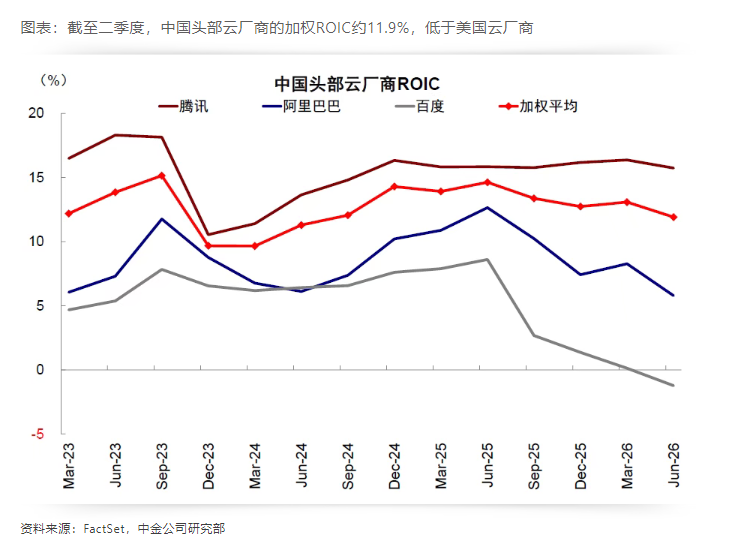
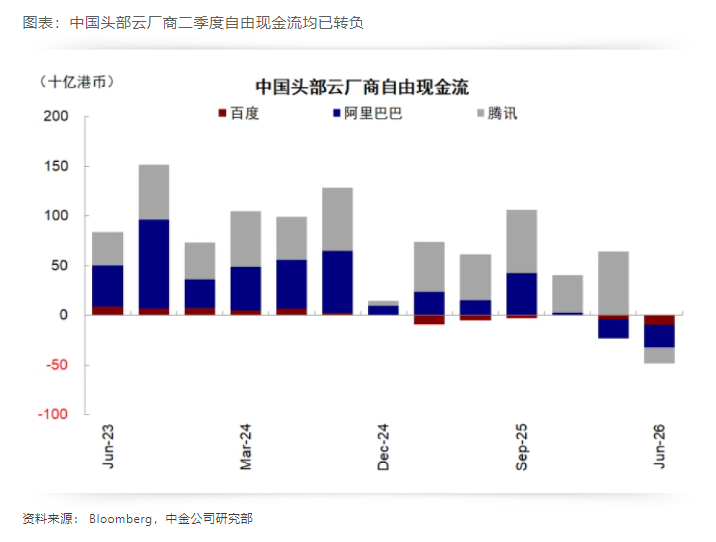
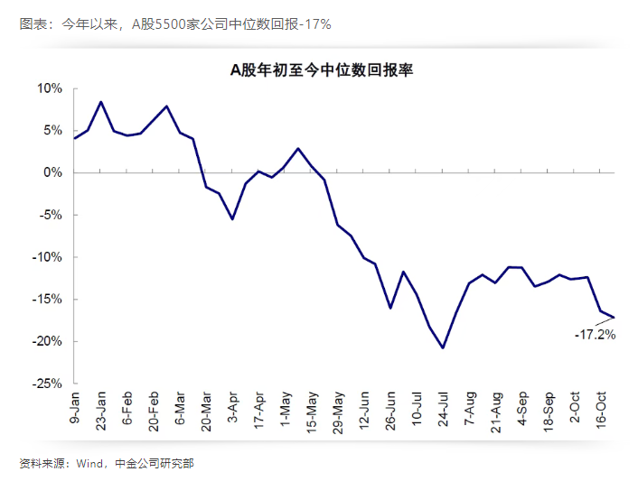
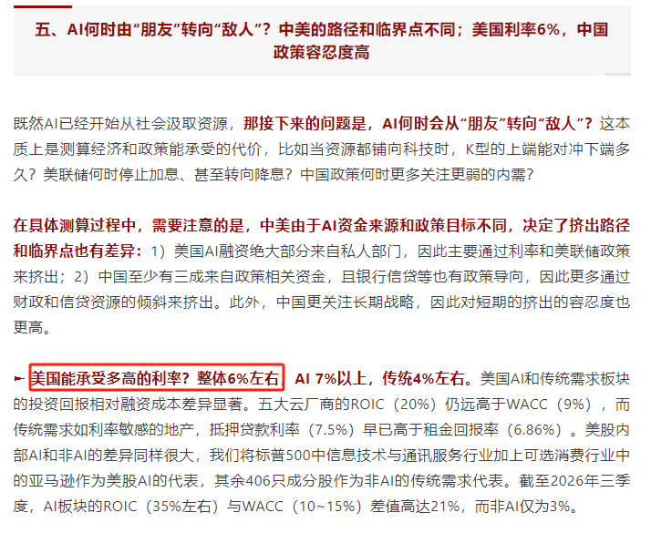
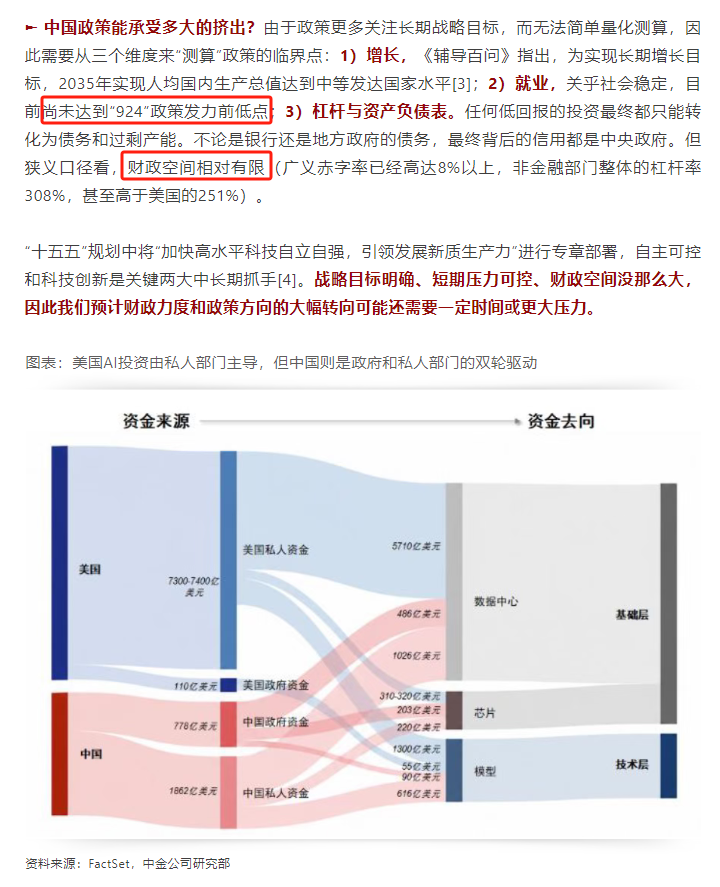
背景与关键数据
- ROIC（投入资本回报率）：企业每投入 100 元资本（股东的钱加借来的钱），一年能赚回多少税后经营利润。拿来和它比的是 WACC（加权平均资本成本），也就是这些钱的"使用费"。ROIC 高于 WACC，才算在创造价值。
- 中美对比：中国头部云厂商加权 ROIC 约 11.9%，美国约 19.9%。中国三家二季度自由现金流（经营现金流减资本开支）全部转负，说明经营赚的钱已经不够覆盖 AI 投入，要靠发债、融资或动用存量现金。
- 挤出效应（Crowding Out）：原指政府大举借钱推高利率、挤掉私人投资。中金把这个概念用在 AI 上：AI 大量吸收资本、电力、芯片、工程师和信贷额度，其他行业的融资成本随之上升，能拿到的资源变少。
- 中美挤出的路径不同（图 4、图 5）：美国 AI 资金几乎都来自私人部门，挤出主要靠利率传导：AI 热拉高投资和需求，美联储加息，地产这类对利率敏感的行业受伤。中国 AI 资金至少三成来自政策相关渠道，银行信贷也有政策导向，挤出更多通过财政和信贷资源的倾斜发生。
- 美国能承受多高的利率：中金测算整体约 6%，其中 AI 部门 7% 以上、传统部门约 4%。依据是：美国五大云厂商 ROIC 约 20%，远高于约 9% 的 WACC；而地产这类传统需求，按揭利率约 7.5%，已经高于约 6.86% 的租金回报率。标普 500 里 AI 板块 ROIC 约 35%，WACC 约 10%–15%，差值约 21%；非 AI 板块只有约 3%。
图片解读
- 图 1 中国头部云厂商 ROIC（2023.3–2026.6）：腾讯（深红）一直最高，在 15%–18%，最新约 15.7%。阿里（深蓝）从 2025 年中约 12.6% 掉到约 5.8%。百度（灰）从约 8.6% 一路跌到 -1% 左右，已经是负回报。加权平均（红线带点）从约 14.6% 降到 11.9%。
- 图 2 自由现金流（十亿港元，三家堆叠）：2023–2024 年三家合计每季度为正，在 50–150 之间。2025 年起明显缩水，2026 年 6 月这一季三家全部为负，合计约 -48，其中阿里约 -22、腾讯约 -15、百度约 -10。
- 图 3 A 股年初至今中位数回报：5500 家公司的中位数回报年初一度到 +8%，3 月后转跌，7 月下旬最低约 -21%，反弹后最新约 -17.2%。指数可能靠少数 AI 龙头撑着，普通股票今年亏得不少，挤出效应在股市上就是这个样子。
- 图 4 文字截图：中金的问题是"AI 何时从朋友变成敌人"：资源都流向科技时，K 型经济的上端能对冲下端多久？美联储何时停止加息？中国政策何时更关注偏弱的内需？红框结论：美国整体能承受约 6% 的利率，AI 7% 以上，传统部门 4% 左右。
- 图 5 文字 + 桑基图：中国政策的承受力从三个维度衡量：增长目标（2035 年人均 GDP 达到中等发达国家水平），就业（还没跌到"924"政策发力前的低点），杠杆（广义赤字率已超 8%，非金融部门杠杆率 308%，高于美国的 251%）。结论是"财政空间相对有限"，大幅转向还需要时间或更大的压力。桑基图左边是资金来源：美国私人资金约 7300–7400 亿美元，美国政府资金约 110 亿；中国政府资金约 778 亿，中国私人资金约 1862 亿。右边是去向：数据中心、芯片、模型，数据中心占大头（美国私人资金约 5710 亿流向数据中心）。
为什么重要 / 对市场和经济的含义
- 对股市结构：AI 龙头和其他股票的分化会持续。指数看着还行，中位数股票却在跌，买指数和自己选股的体验差别很大。
- 对政策：美国这边，只要 AI 投资还在拉高需求，美联储就不容易停止加息（呼应帖 2、帖 24）。中国这边，财政空间有限，"大水漫灌"式刺激不太可能，政策大概率继续偏向科技和产业，对传统内需的直接支持有限。
- 对 AI 自身：回报率低、现金流转负的公司，一旦融资环境收紧，资本开支可能被迫放缓。全球 AI 产业链（芯片、光模块、服务器）都要留意这个风险。
- Jason 想提醒的是：看 AI 不能只看 AI 公司赚不赚钱，要看整个经济加总之后是赚还是亏。
延伸知识
- K 型经济：增长时一部分人群和行业往上走（K 的上半笔），另一部分往下走（下半笔）。AI 时代的 K 型：科技、资本密集型行业和高技能人才往上，传统制造、服务业和低技能岗位往下。
- 机会成本：经济学最基础的概念之一。一块钱、一度电用在 A 上，就不能用在 B 上。评估 AI 投资时真正要问的是：这些资源投到别处能产生多少价值？
帖 15 · 花旗：中欧贸易站在十字路口，2027 年中国可能面临"保四"压力（美西 10-26 14:05）
中国对欧盟每天顺差超过 10 亿欧元，双方卖的东西又越来越像，正面竞争在加剧。欧盟准备出手"再平衡"，中国 2027 年的出口和增长会更难。读全文收起
帖子原文
（要点转述）花旗认为全球贸易政策风险的焦点正在转向欧洲。欧盟对华贸易逆差已超过每天 10 亿欧元，欧盟表态要动用一切工具"再平衡"；近期中欧在混合动力汽车上的协议是缓和信号，但局部协议未必解决扩大中的失衡。花旗认为 2027 年中国可能要面对把实际增速维持在 4% 左右的"保四"压力。按中国海关口径，对欧顺差最大的是荷兰、波兰、西班牙，荷兰作为物流枢纽会转口，双边差额不等于当地消费。2020 年后中欧出口结构越来越像，中国全球出口份额升 1.3 个百分点，欧盟对外出口份额降 2.3 个百分点。化工和塑料可能是下一轮保障措施调查的对象，欧盟计划 2026 年 12 月提出供应链多元化措施。#政策分析#
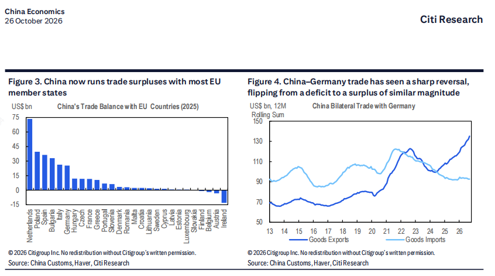
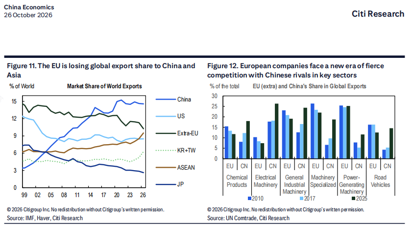
背景与关键数据
- 每天 10 亿欧元：一年约 3600 亿欧元，和帖 26 彭博报道的欧盟去年对华逆差 3600 亿欧元对得上。
- 出口结构相似度：衡量两个经济体的出口商品篮子有多像。以前中国卖服装、玩具、电子组装，欧洲卖汽车、机械、化工，两边互补。现在中国在汽车、机械、化工上快速追赶，互补变成了竞争。
- 份额此消彼长：中国全球出口份额升 1.3 个百分点，欧盟对区外出口份额降 2.3 个百分点。欧洲丢的不只是本土市场，还有第三方市场。
- 荷兰现象：鹿特丹是欧洲最大的港口，很多货在荷兰报关进入欧盟，再运去德国等地。所以统计上中国对荷兰顺差最大，最终消费者却在别处。这叫转口贸易造成的统计偏差。
- "保四"：把实际 GDP 增速保在 4% 左右。参照帖 23，2026 年前三季度增速约 4.6%，其中一半以上靠出口拉动。欧洲这个大市场一旦收紧，2027 年保 4% 的难度会上升。
- 保障措施（Safeguard）：WTO 允许成员在某类进口激增、严重损害本国产业时，临时设配额或加关税。它不需要证明对方"倾销"或"补贴"，只要证明进口激增造成了损害，门槛比反倾销低，而且对所有来源国适用。
图片解读
- 图 1 左（Figure 3）2025 年中国对欧盟各成员国的贸易差额（十亿美元）：荷兰约 72，遥遥领先；其后是波兰约 39、西班牙约 36；意大利、德国各约 25。只有最右端少数几国对中国是顺差，爱尔兰约 -12，奥地利、比利时小幅为负。中国对绝大多数欧盟成员国都是顺差。
- 图 1 右（Figure 4）中德双边贸易（12 个月滚动，十亿美元）：深蓝是中国对德出口，浅蓝是中国自德进口。2013–2020 年进口一直多于出口，中国是逆差。2022–2024 年两条线交叉、缠绕，之后出口一路上行，最新出口约 135、进口约 92，逆差翻成了规模相当的顺差。德国这个欧洲制造业的心脏，对华贸易从赚钱变成亏钱，这是欧盟态度转硬的核心原因。
- 图 2 左（Figure 11）全球出口市场份额：中国（蓝）从 1999 年约 3.5% 升到约 14.5%–15%；欧盟对区外出口（深绿）从约 14.5% 降到约 10.3%；美国约 8.5%，基本持平；日本从约 7% 降到约 2.7%；东盟（棕）和韩国加台湾（绿色点线）近年明显上升。
- 图 2 右（Figure 12）重点行业的全球出口份额（2010 / 2017 / 2025）：化工品，欧盟约 15.5% → 11.8%，中国约 8% → 18%。电气机械，中国约 18% → 26%。通用工业机械，中国约 12.5% → 24%，已超过欧盟的约 19%。专用机械，中国约 6.5% → 18.7%。发电机械，欧盟仍以约 25% 领先，中国约 11.6%。道路车辆，欧盟约 16% → 12.5%，中国约 4% → 14.6%，已经超过欧盟。
为什么重要 / 对市场和经济的含义
- 贸易摩擦的主战场可能从中美转向中欧：欧洲对华出口依赖度比美国低，但产业竞争更直接（汽车、机械、化工正是欧洲的饭碗），政治上也更难承受"去工业化"。
- 化工、塑料、家具、机械可能是下一批：这和帖 26 彭博的独家消息互相印证。相关的中国出口企业，以及在欧洲设厂的中国企业，都可能面对配额或关税。
- 对欧洲股市：保护措施利好欧洲本土工业股（帖 26 提到消息出来后欧洲工业股上涨），但长期看保护主义也会推高欧洲自己的成本。
- 对中国增长：出口是 2026 年中国最强的增长引擎。欧盟这个最大的单一市场之一一旦收紧，2027 年就需要更多内需政策来补位。
延伸知识
- "中国冲击 2.0"：经济学家把 2001 年中国入世后对美国制造业就业的冲击叫"中国冲击（China Shock）"。如今中国在汽车、机械、化工等高附加值行业崛起，被称为"中国冲击 2.0"，受冲击的从美国的低端制造变成了德国等国的中高端制造。
- 比较优势与"替代"：传统贸易理论讲比较优势，各做最擅长的，互通有无。当一个国家在几乎所有制造业都形成规模和成本优势时，贸易伙伴面对的就不再是分工而是替代，政治反弹也会更强。
帖 16 · 国联民生：金价跌破 4000 美元进入"深水区"，超跌反弹上限约 4300–4500（美西 10-26 14:11）
金价从 8 月高点跌了 15% 以上。国联民生认为短期会有超跌反弹，美国国会陷入僵局可能是催化剂，但现在谈"重回牛市"还太早，反弹上限大约在 4300–4500 美元。读全文收起
帖子原文
（要点转述）国联民生认为黄金短期回调已进入"深水区"：伦敦金现跌破 4000 美元/盎司，意味着 8 月 25 日以来的最大回撤超过 15%，市场或许在等尾部风险出清。如果中期选举后美国变成"跛脚政府"，短期反弹的催化剂会增加。但中长期重回上涨趋势的基础不牢，理由有三：今年高基数会让 2027 年美国通胀同比下移，但不等于美联储马上放慢加息；跛脚政府下财政扩张放缓，美元信用弱化的速度也会变慢；历史上金价向上拐点多在加息周期的下半场才能确认。它判断超跌反弹上限在 4300–4500 美元，大概率到不了 8 月前高 4700 美元。#金融#
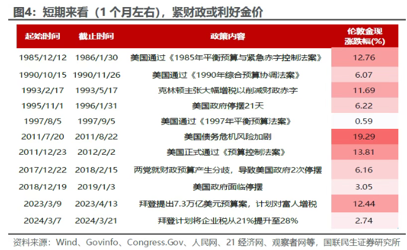
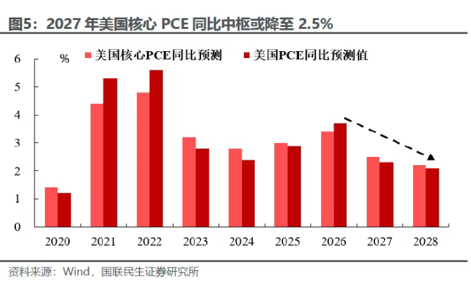
背景与关键数据
- 金价位置：8 月 25 日前后高点约 4700 美元，现已跌破 4000。摩根士丹利报告（帖 20、21）显示 10 月 23 日约 4013 美元。中金的大类资产图（帖 18）里黄金年内 -7.5%，而 2025 年黄金涨了 63.7%（帖 7 的表格）。
- "深水区"和"尾部风险出清"：回撤超过 15%，通常意味着加了杠杆的多头被迫平仓。"出清"是说恐慌抛售结束，筹码换到更稳的持有者手里，之后才容易企稳。
- 跛脚政府（Lame Duck）：美国中期选举在 2026 年 11 月 3 日。执政党如果丢掉国会一院，总统议程就很难通过，成了"分裂政府"，财政扩张受限，甚至可能出现政府停摆。
- 为什么紧财政短期利好金价：见图 1。预算法案、政府停摆、债务上限危机这类"财政摩擦"事件发生后约一个月，金价全部上涨。逻辑是：财政僵局引发对美国政府信用和违约的担忧，资金去找避险资产。
- 为什么中长期反而不利：紧财政意味着赤字扩张变慢，"美元信用被稀释"的速度也变慢，而这恰恰是黄金长期上涨的核心逻辑之一。
- 高基数：2026 年油价暴涨（布伦特年内 +90%），通胀被推高。2027 年即使物价继续涨，同比数字也会因为基数高而回落，但美联储看的是趋势和预期，不会因为同比回落就马上停止加息。
- 加息下半场：历史上金价往往在加息周期后段、市场开始预期降息时见底回升。美联储刚重启加息（帖 2、帖 24），还在上半场。
图片解读
- 图 1（表）短期看（1 个月左右），紧财政或利好金价：列出 11 次美国财政收紧或僵局事件，以及期间伦敦金现的涨跌幅。1985 年《平衡预算与紧急赤字控制法》+12.76%；1990 年《综合预算协调法》+6.07%；1993 年克林顿大幅增税减赤 +11.69%；1995 年政府停摆 21 天 +6.22%；1997 年《平衡预算法》+0.59%；2011 年债务危机 +19.29%（最大）；2011–12 年《预算控制法》+13.81%；2017–18 年两次停摆 +6.16%；2018–19 年停摆 +3.05%；2023 年拜登 7.3 万亿美元预算案、对富人增税 +12.44%；2024 年拟把企业税从 21% 提到 28% +2.74%。全部为正。
- 图 2（柱状图）2027 年美国核心 PCE 同比中枢或降至 2.5%：浅红是核心 PCE，深红是总体 PCE，2026 年起为预测。2021–22 年高峰约 4.4%–5.6%；2025 年约 3.0% / 2.9%；2026 年预测升到约 3.4% / 3.7%；2027 年回落到约 2.5% / 2.3%；2028 年约 2.2% / 2.1%。虚线箭头表示通胀"换挡下移"。
为什么重要 / 对市场和经济的含义
- 两家机构的分歧：大摩（帖 20）看 2027 年二季度到 5000 美元，国联民生认为反弹难破 4700 的前高。分歧在于：央行和 ETF 的结构性买盘能不能压过加息的影响。
- 交易含义：短期（11 月中期选举前后）可能有反弹；中期要看美联储加息什么时候结束。
- 黄金现在的主要对手是"实际利率上升加上美元走强"。理解这一点，才能看懂金价为什么在战争和高通胀的年份反而下跌。
延伸知识
- 实际利率与金价：黄金不生息，持有它的机会成本是实际利率（名义利率减通胀预期）。实际利率越高，持有黄金越"亏"，金价通常承压。帖 20 大摩提到，按 2026 年 3–7 月的关系，金价本该低于 3000 美元，实际却在 4000 上方，多出来的部分来自央行和 ETF 的结构性买盘。
- 基数效应：同比增速 = 今年 ÷ 去年 − 1。去年涨得多（高基数），今年即使物价还在涨，同比数字也会变小。读通胀数据时，要分清"物价水平"和"上涨速度"。
帖 17 · 摩根大通：AI 行情从"怕错过"变成"怕没回报"，日股策略分两阶段（美西 10-26 14:21）
AI 股这一轮下跌不是利率单独造成的，而是市场开始追问"AI 什么时候赚回钱"。JPM 建议日股先做防守轮动，2027 年再回到"AI 半导体 + 日本内需"。读全文收起
帖子原文
（要点转述）摩根大通说，投资者的担心从"能不能赶上 AI 增长"变成了"AI 资本开支什么时候能带来足够的现金回报"。它不认为 AI 投资周期已经结束，认为日股已有一定超卖、AI 产业链长期仍有空间，但融资成本、资产负债表、投资回报率和风险头寸正在主导短期股价。日股虽然大跌，2026 年整体仍偏强；日本 10 年期国债收益率从 10 月初约 3.08% 降到 10 月 23 日的 2.80%，美国 10 年期从约 5.27% 回落到 5.00%，显示有避险买债。这说明投资者卖科技股不只是因为利率上升，而是在重估股票风险和未来现金流。策略分两阶段：现在到年底前后，保留高质量 AI 股，同时超配 IT 服务、互联网及游戏、银行、资本品（含科技基础设施和商社），长端利率若停止上行可考虑地产建筑；2027 年起，AI 半导体可能反转，日本内需股会成为重要主题。#股市#
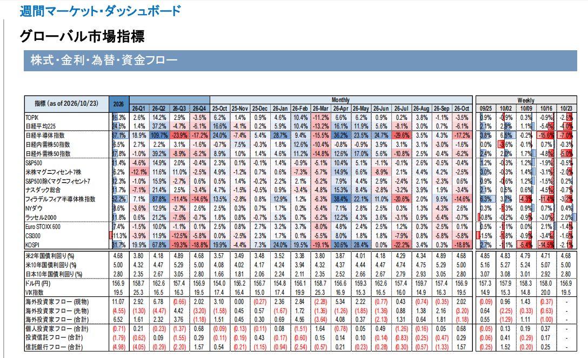
背景与关键数据
- 两种估值调整：一种是利率驱动，无风险利率上升，未来现金流的折现值下降，所有长久期资产（成长股、长债）一起跌。另一种是盈利或风险偏好驱动，投资者怀疑未来现金流本身，或者要求更高的风险补偿。区分方法是看债券：股跌、债也跌（收益率上升）是利率驱动；股跌、债涨（收益率下降）是避险驱动。10 月属于后者：美债 10 年期从 5.27% 降到 5.00%，日债从 3.08% 降到 2.80%。
- 日股和半导体的波动（图）：截至 10 月 23 日，TOPIX 年内 +16.3%，日经 225 +24.8%。日经半导体指数年内 +57.1%，但 10 月 -17.2%、最近一周 -7.0%。费城半导体指数年内 +52.2%，10 月 -14.6%。韩国 KOSPI 年内 +31.7%，10 月 -18.8%。
- 为什么超配这些行业：IT 服务和互联网游戏是轻资产，不靠 AI 资本开支吃饭；银行受益于日本利率上升带来的息差扩大；资本品和商社跟基础设施、资源相关（巴菲特持有日本五大商社）。
图片解读
- JPM 周度市场仪表盘（日文，数据截至 2026/10/23）：行是股票指数、利率、汇率和资金流；列依次是 2026 年初至今、各季度、各月、最近五周。
- 股票：TOPIX +16.3%，日经 225 +24.8%，日经半导体 +57.1%（二季度 +109.7%，三季度 -23.9%，四季度至今 -17.2%），日经内需 50 +6.5%，外需 50 +17.8%。美股：标普 500 +11.4%，美国七巨头仅 +6.2%，标普 500 除七巨头 +12.3%，纳指 +11.7%，费城半导体 +52.2%，道指 +8.6%，罗素 2000 +11.8%。Euro STOXX 600 +7.4%；沪深 300 约 -11.3%（与帖 18 一致）；KOSPI +31.7%。
- 利率和汇率：美国 2 年期 4.68%，10 年期 5.00%（三季度末曾到 5.29%），日本 10 年期 2.80%；美元兑日元 156.9；VIX 19.5。
- 资金流（单位应为万亿日元）：海外投资者现货年内净买约 11.07、期货净卖约 4.55；个人投资者年内小幅净卖；信托银行净卖约 4.98。
- 最值得注意的一格：七巨头年内跑输标普其余 493 家。AI 龙头今年并不领涨美股。
为什么重要 / 对市场和经济的含义
- "AI 回报焦虑"是全球性的：帖 14 中金讲中国，这里 JPM 讲日本。市场从"讲故事"进入"对账本"阶段，自由现金流、负债和融资成本变得重要。
- 资金在 AI 内外之间轮动：七巨头落后标普其余成分股，美股价值股大幅跑赢成长股（帖 7 表格：价值 IWD +23.7%，成长 IWF +1.4%）。
- 对日本：利率正常化（10 年期接近 3%）加上内需复苏，被 JPM 当作 2027 年的主题，也和帖 9 的"日本资金回流本土"呼应。
延伸知识
- 股债相关性：衰退恐慌时一般股跌债涨（负相关，债券能对冲股票）；通胀恐慌时股债双杀（正相关）。观察股债是同向还是反向，可以判断市场在怕什么。帖 20 大摩讲的也是这件事。
- 超卖：技术分析用语，指价格短期跌得太快太多、偏离均值，常用 RSI 低于 30 之类的指标衡量。超卖不等于马上反弹，只说明短期抛压已经很重。
帖 18 · 中金：A 股港股下半年大幅回调，年内收益全部转负；全球大类资产年初至今表现（美西 10-26 14:25）
2026 年是"商品年"和"日本年"：布伦特原油涨 92%，日本股票涨 25%；中国股票则是全球表现最差的资产之一，海外中资股跌近 19%。读全文收起
帖子原文
（要点转述）中金指出，今年下半年中国资本市场回调幅度较大：沪深 300、创业板指、恒生指数、恒生科技自年内高点分别回调 20.2%、41.1%、18.9%、35.8%，年内收益都已转负。附图为年初至 10 月 23 日的全球主要资产表现。#金融#
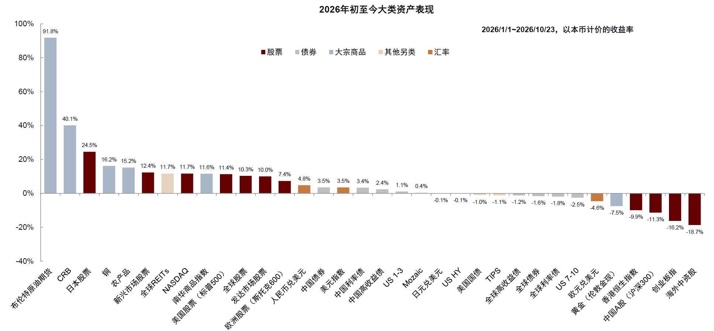
背景与关键数据
- 回撤和年内收益的关系：创业板从高点跌了 41.1%，年内收益是 -16.2%，说明它上半年先涨了一大段（高点时年内约 +42%）。注意算术的不对称：跌 41.1% 之后，要涨约 70% 才能回到高点。
- 本币计价：图里是各资产的本币收益，没考虑汇率。人民币兑美元年内 +4.8%（升值），所以美元投资者持有 A 股的亏损会小一些。
- 原油为什么暴涨：美伊战争（帖 27），布伦特年内涨了约九成，带动 CRB 商品指数 +40%。
图片解读
- 2026 年初至今大类资产表现（2026/1/1–10/23，本币收益率）：深红是股票，灰色是债券，蓝灰是大宗商品，米色是另类资产，橙色是汇率。从左到右按涨幅排序：
- 涨幅前列：布伦特原油期货 +91.8%，CRB 商品指数 +40.1%，日本股票 +24.5%，铜 +16.2%，农产品 +15.2%，新兴市场股票 +12.4%，全球 REITs +11.7%，纳斯达克 +11.7%，南华商品指数 +11.6%，标普 500 +11.4%，全球股票 +10.3%，发达市场股票 +10.0%，欧洲斯托克 600 +7.4%。
- 中间：人民币兑美元 +4.8%，中国债券 +3.5%，美元指数 +3.5%，中国利率债 +3.4%，中国高收益债 +2.4%，美债 1–3 年 +1.1%。
- 小幅下跌：日元兑美元 -0.1%，美国高收益债 -0.1%，美国国债 -1.0%，TIPS -1.1%，全球高收益债 -1.2%，全球债券 -1.6%，全球利率债 -1.8%，美债 7–10 年 -2.5%，欧元兑美元 -4.6%。
- 垫底：黄金（伦敦金现）-7.5%，恒生指数 -9.9%，沪深 300 -11.3%，创业板指 -16.2%，海外中资股 -18.7%。
为什么重要 / 对市场和经济的含义
- 今年全球的主线：能源冲击推高通胀，美联储加息，AI 估值被重估。这种环境下商品赢，长债输（美债 7–10 年 -2.5%），黄金也输（加息加美元走强），中国权益输（AI 挤出、地产拖累、外部贸易压力）。
- 中国资产的下跌和今天多帖共振：帖 13 地产、帖 14 AI 挤出（A 股中位数 -17%）、帖 15 和帖 26 欧盟贸易壁垒、帖 23 内需偏弱。
- 股弱汇强：人民币兑美元反而升了 4.8%，背后是出口强、顺差大带来的结汇需求。股跌而汇率不跌，说明这次下跌主要是对增长和盈利的担忧，不太像资本大规模外流引发的下跌。
延伸知识
- 回本的不对称：跌 20% 要涨 25% 才回本，跌 50% 要涨 100%。所以控制最大回撤在长期复利里格外重要。
- 滞胀象限：常见的"经济周期 / 资产轮动"框架里，增长弱、通胀高的"滞胀"阶段，商品和现金占优，股票和债券都差。2026 年这张图很像滞胀象限的教科书案例，只是日本、美国股市因 AI 和自身因素表现得没那么差。
帖 19 · 中指院：全国租金比高点跌近 11%，深圳靠租金回本要 57 年（美西 10-26 14:28）
房价跌了好几年，租金也在跌，所以"买房收租"的回报率依然很低：深圳只有 1.75%，靠租金回本要 57 年。读全文收起
帖子原文
（要点转述）中指院数据：2015 年以来全国租金先升后降，截至 2026 年 9 月累计涨 12.83%，远低于同期二手房价 36.69% 的涨幅；9 月全国挂牌租金指数环比 -0.44%，比历史高点累计下跌 10.88%。租售比是国际通用的楼市健康度指标。40 个大中城市里，只有长春高于 4%，另有 2 个城市低于 2%；深圳 1.75%，40 城垫底，单靠租金至少 57 年才能回本；租售比最低的十个城市还包括上海 2.11%、北京 2.06%、广州 2% 等，提示这些高房价城市的风险。#房价#
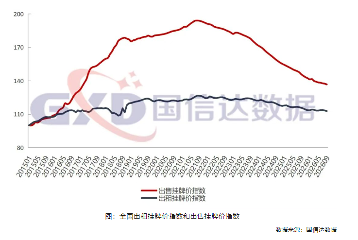
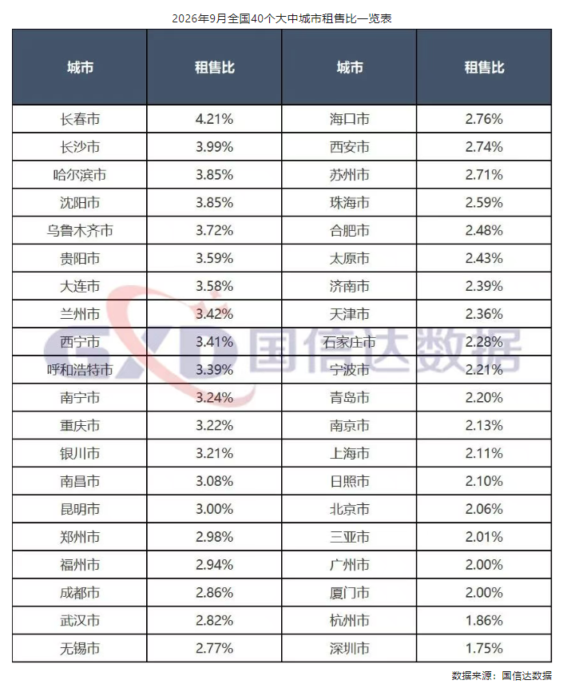
背景与关键数据
- 租售比 = 年租金 ÷ 房价。1.75% 的意思是：100 万元的房子一年租金 1.75 万元，回本需要 1 ÷ 1.75% ≈ 57 年。国际上一般认为 4%–6% 比较健康，这样租金收入才能覆盖贷款利息和持有成本。
- 租金为什么跌：收入预期偏弱，年轻人就业压力大，城市人口流入放缓，保障性租赁住房供给增加，还有一些卖不掉的房子转去出租，租赁供给变多了。
- 一线和东北的反差：东北城市房价低，所以租售比高（长春 4.21%，哈尔滨和沈阳都是 3.85%）。但这些城市人口外流，房价也未必稳。租售比高不一定代表有投资价值，也可能是市场对未来房价更悲观。
- "负持有收益"：租金回报低于房贷利率时，贷款买房再出租，每个月租金不够还利息，要靠房价上涨才能赚钱。房价不涨甚至下跌时，这笔账就是亏的。
图片解读
- 图 1 全国出售挂牌价指数和出租挂牌价指数（国信达数据，2015 年 1 月 = 100）：红线是出售挂牌价，从 100 涨到 2021 年下半年约 194 的高点，之后连续下跌到约 137。深蓝线是出租挂牌价，从 100 涨到 2021 年约 126 的高点，之后缓慢下行到约 113。两线之间的"剪刀差"在 2017–2021 年迅速拉大，这就是租售比恶化的原因。近年房价跌得比租金快，剪刀差在收窄，但离 2015 年的水平还很远。
- 图 2 2026 年 9 月全国 40 个大中城市租售比一览：最高的是长春 4.21%、长沙 3.99%、哈尔滨和沈阳 3.85%、乌鲁木齐 3.72%；最低的是深圳 1.75%、杭州 1.86%、广州和厦门 2.00%、三亚 2.01%、北京 2.06%、日照 2.10%、上海 2.11%、南京 2.13%、青岛 2.20%。帖子说的"2 个城市低于 2%"就是深圳和杭州。
为什么重要 / 对市场和经济的含义
- 房价最终要由租金来支撑：从投资角度看，如果租金不涨，一线城市租售比要回到 3%–4%，房价还得大幅下跌，或者靠租金长期上涨慢慢消化。这是高盛（帖 13）判断"全国二手房价 2030 年才见底"背后的逻辑之一。
- 和帖 25 是同一件事：住宅、写字楼、商场、仓库的租金都在跌，说明问题出在需求端（收入和经营），不只是地产政策。
- 租与买的经济学：租金回报远低于资金成本时，从纯财务角度"租"比"买"便宜，这也是很多年轻人选择租房的经济原因。
延伸知识
- 用"股息率"看房子：房子就像一只股票，租金是股息，租售比就是股息率。股息率只有 1.75% 的股票，只有在投资者预期股息（租金）高速增长时才划算；租金在跌，估值就得往下调。
- 房价租金比：租售比的倒数，相当于股票的市盈率（P/E）。深圳约 57 倍，好比一只市盈率 57 倍、利润还在下滑的股票。
帖 20 · 摩根士丹利：黄金是"同一个避风港，不同的风暴"，2027 年二季度目标 5000 美元（美西 10-26 14:42）
黄金不是低波动资产，也不再是股票下跌时的保险。它真正擅长对冲的是"财政和主权债务风险"，也就是美债暴跌。在加息和财政担忧并存的今天，大摩仍把它当首选金属，目标 5000 美元。读全文收起
帖子原文
（要点转述）大摩认为，2020 年以后黄金和股票的关系变了：股市暴跌时黄金未必涨，可能一起跌；但美债遭严重抛售时，黄金能减轻组合损失。原因是投资者越来越担心赤字、主权债务和通胀，而不只是衰退。最近几周的走势让人想起 2022–23 年股债同跌、传统分散失效。黄金能不能避险，取决于你想防哪种风险。"避险"至少有三层含义：价格稳定、与股票负相关、极端危机中提供保护，黄金不一定满足前两条；1998 年以来黄金年化波动率接近 20%，和美股相当，远高于美债。通胀冲击情景下股、债、金一起跌，衰退情景下债和金都可能提供保护，关键看风险事件引发什么样的货币政策反应。过去金价主要由实际利率和美元驱动，现在实际利率上升仍有大量买盘；按 2026 年 3–7 月的关系，当前金价应低于 3000 美元，央行购金和 ETF 流入正在改变定价。2027 年二季度目标价 5000 美元，风险包括美联储超预期加息、美元走强、ETF 流出、实物需求减弱、央行售金和技术破位引发的卖盘。#金融#
本帖附 PDF：《Gold: Same Haven, Different Storm（Cross-Asset Dispatches）》，约 1.35 MB（未下载，内容以帖子正文和截图为准）。
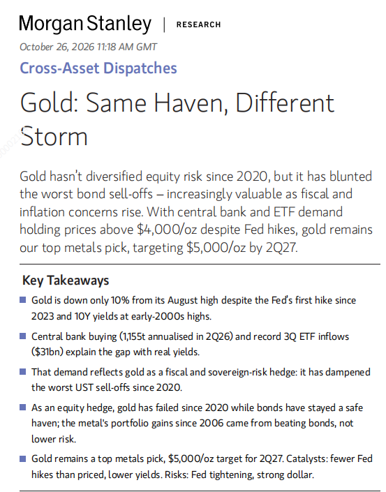
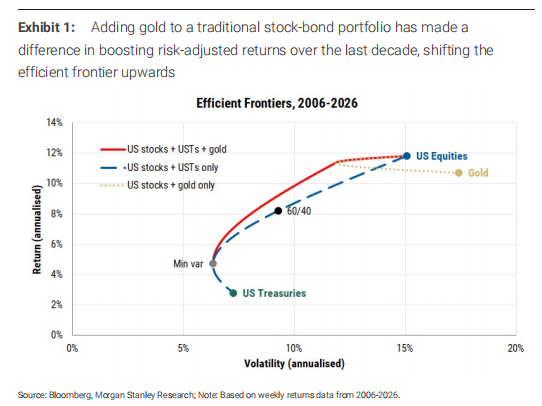
背景与关键数据
- 三种"避险"：一是自身价格稳，比如现金、短债；二是和股票负相关，传统上是长期国债；三是尾部保护，平时表现一般，危机时显灵。大摩的意思是：黄金主要属于第三种，而且只对特定的危机有效。
- 2020 年后的变化：黄金和股票的相关性转正（一起涨一起跌），但在美债大跌的月份，黄金表现好。美债大跌往往源于财政或通胀担忧，而黄金对冲的正是"政府信用"风险。
- 结构性买盘：2026 年二季度央行购金按年化算约 1155 吨，三季度黄金 ETF 流入创纪录的 310 亿美元。
- 实际利率模型失灵：过去 TIPS 实际收益率一上升，金价就跌，这个关系很稳。按 2026 年 3–7 月的关系推算，金价应低于 3000 美元，实际却在 4000 上方，多出的约 1000 美元可以理解为"结构性买盘溢价"。
- 跌了多少：大摩说金价较 8 月高点只跌了约 10%，帖 16 国联民生说最大回撤超过 15%，差别来自取点的时间（一个用最低点，一个用报告日）。
图片解读
- 图 1 报告首页（2026-10-26）：标题《黄金：同一个避风港，不同的风暴》。导语：黄金自 2020 年以来没能分散股票风险，但缓和了最严重的美债抛售，在财政和通胀担忧上升时越来越有价值；央行和 ETF 需求让金价在美联储加息时仍守在 4000 美元上方。五条要点：① 尽管美联储迎来 2023 年以来首次加息、10 年期美债收益率处于本世纪初以来的高位，金价较 8 月高点只跌约 10%；② 央行购金（2Q26 年化 1155 吨）和创纪录的三季度 ETF 流入（310 亿美元）解释了金价与实际利率的背离；③ 这种需求反映黄金是财政和主权风险的对冲工具，2020 年以来它缓和了美债最严重的抛售；④ 作为股票对冲，黄金 2020 年以来是失效的，债券仍是股票的避风港；2006 年以来黄金对组合的贡献来自"收益跑赢债券"，而不是降低风险；⑤ 黄金仍是首选金属，2027 年二季度目标 5000 美元，催化剂是加息次数少于市场定价、收益率下行，风险是美联储进一步收紧和美元走强。
- 图 2 有效前沿（2006–2026，周度数据）：横轴是年化波动率，纵轴是年化收益率。美股约 15% 波动、约 11.8% 收益；美债约 7% 波动、约 2.7% 收益；黄金约 17.5% 波动、约 10.7% 收益；60/40 组合约 9.3% 波动、约 8.2% 收益；最小方差点约 6.3% 波动、约 4.8% 收益。蓝色虚线是只有股票加美债的有效前沿，红色实线是加入黄金后的前沿，红线整体在蓝线上方：同样的风险下收益更高。
为什么重要 / 对市场和经济的含义
- 对配置：黄金的意义在组合层面，也就是提高同等风险下的收益，而不是单独持有就能避险。
- 当前环境正适合这种对冲：美联储加息，美债 10 年期在 5% 附近，油价暴涨，法国利差走阔（帖 24），这是典型的"通胀和财政型风险"。这种环境下债券保护不了组合，黄金对冲财政风险的价值就上来了。
- 读研报要抓分歧点：大摩更看多（央行买盘扛得住加息），国联民生（帖 16）更谨慎（加息上半场难确认牛市）。两家真正的分歧只有一个：结构性买盘能不能持续。
延伸知识
- 有效前沿（Efficient Frontier）：马科维茨 1952 年提出的现代投资组合理论。给定一组资产，可以画出"每个风险水平下能拿到的最高收益"这条曲线。加入一个和现有资产相关性不高的新资产，前沿往往会往左上方移，这就是"分散化是唯一的免费午餐"。
- 60/40 为什么在 2022 年失灵：60% 股票加 40% 债券有效的前提是股债负相关。2022 年通胀冲击下股债双杀（帖 7 表格里美股 SPY -18.2%，长债 TLT -31.2%），60/40 经历了几十年来最差的年份之一，黄金、商品这类"第三类资产"因此重新受到重视。
帖 21 · 摩根士丹利跨资产展望：油价回落、美债收益率小降，股票未来两个季度正收益（美西 10-26 14:55）
大摩的基准情景是"温和的好消息"：油价回落，利率小降，股票小涨。但它特别提醒，预期回报最高的新兴市场，在坏情景里也跌得最多。读全文收起
帖子原文
（要点转述）大摩的跨资产基准判断是：油价回落、债券收益率小幅下降、主要股市未来两个季度取得正收益。布伦特上周涨 6.2%；大摩石油团队上调了 2027 年布伦特预测，理由之一是四季度到明年二季度全球炼厂将进入较大规模的检修期，但仍预计 2027 年二季度油价低于现在。股票更看好欧洲和新兴市场，但这不代表新兴市场风险最低：悲观情景下新兴市场和日本跌幅更大，要分清预期回报和下行风险。预计 2027 年二季度美国 10 年期收益率从 5.00% 降到 4.85%。#金融#
本帖附 PDF：《Cross-Asset Spotlight: Global Rising Oil, Rising Spreads》，约 3.8 MB（未下载，内容以帖子正文和截图为准）。
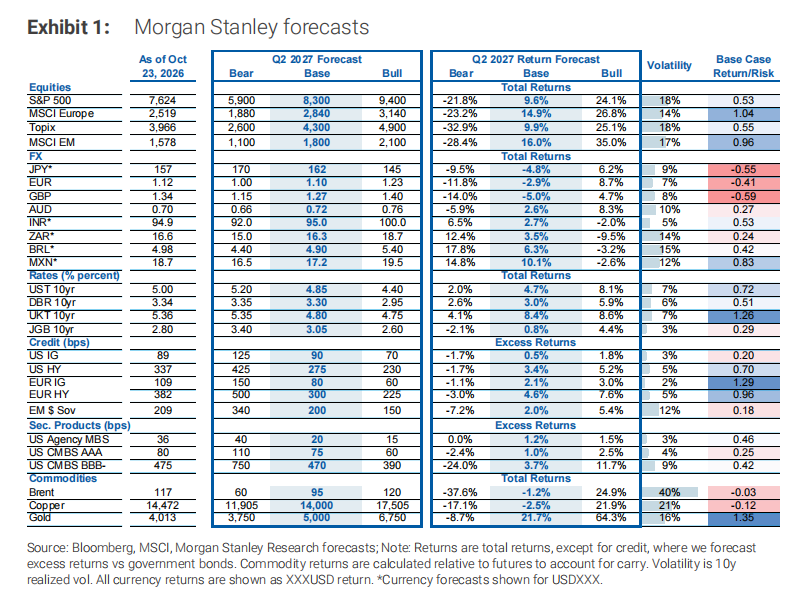
背景与关键数据
- 情景分析：投行通常给熊市、基准、牛市三种情景。基准不是"一定会发生"，而是"最可能发生"。看研报时，熊市情景的跌幅和基准的涨幅要一起看。
- 回报风险比（Return/Risk）：基准回报 ÷ 波动率，衡量每承担一单位风险能换来多少回报，思路和夏普比率一样。
- 炼厂检修：炼油厂每年会集中停工维护，期间原油和成品油的供需节奏都会变化。大摩据此上调了 2027 年油价预测，但仍认为油价会从现在的高位回落。
图片解读
- Exhibit 1 大摩预测表（现值截至 2026-10-23，预测目标 2027 年二季度）：
- 股票：标普 500 现 7624，熊市 5900 / 基准 8300 / 牛市 9400，对应回报 -21.8% / +9.6% / +24.1%，回报风险比 0.53。MSCI 欧洲 2519 → 2840（+14.9%，比值 1.04）。TOPIX 3966 → 4300（+9.9%），熊市 -32.9%，是全表股票里最大的潜在跌幅。MSCI 新兴市场 1578 → 1800（+16.0%），熊市 -28.4%，牛市 +35%。
- 汇率：美元兑日元 157 → 162（日元再贬约 4.8%）；欧元 1.12 → 1.10；英镑 1.34 → 1.27；澳元 0.70 → 0.72；墨西哥比索 18.7 → 17.2（加上利差，基准回报 +10.1%）。
- 利率：美债 10 年期 5.00% → 4.85%（总回报 +4.7%）；德债 3.34% → 3.30%；英债 5.36% → 4.80%（回报 +8.4%，比值 1.26）；日债 2.80% → 3.05%（日债收益率还要上升）。
- 信用利差（bp）：美国投资级 89 → 90，美国高收益 337 → 275，欧洲投资级 109 → 80，欧洲高收益 382 → 300。
- 商品：布伦特 117 → 95，但总回报只有 -1.2%；铜 14472 → 14000；黄金 4013 → 5000，回报 +21.7%，回报风险比 1.35，全表最高。
为什么重要 / 对市场和经济的含义
- 预期和风险不对称：标普基准 +9.6%，熊市却是 -21.8%。下行空间是上行空间的两倍多，"大概率小涨、小概率大跌"是当前美股的真实处境。
- 日本的利率故事还没讲完：大摩仍看日元走弱到 162、日债收益率升到 3.05%，日本利率上行、资金回流本土（帖 9）的趋势还在。
- 黄金是全表回报风险比最高的资产，和帖 20 的结论一致。
- 信用：美国高收益债利差 337bp 已不低，大摩预计收窄到 275，说明它认为企业信用风险整体可控。
延伸知识
- 为什么油价跌 19%，期货投资者只亏 1.2%：表格注释说，商品回报按期货计算、包含展期收益（carry）。战争期间原油期货是现货溢价（backwardation），也就是远月合约比现货便宜得多，市场已经把"油价会回落"写进了期货价格。持有期货的人在滚动换月时不断"低买"远月合约，赚到的展期收益抵消了大部分价格下跌。
- 新兴市场的"高收益、高风险"：新兴市场股票通常对全球增长、美元和大宗商品更敏感，好的时候涨得多，坏的时候跌得多。投资者常用"贝塔（beta）"描述这种放大效应，贝塔大于 1 表示波动比大盘更大。
帖 22 · 澳洲财政部数据：禁购令下外资仍涌入澳洲住宅，中国大陆投资者遥遥领先（美西 10-26 14:58）
澳洲禁止外国人买二手房，但新房和土地仍对外开放。中国大陆依然是最大的外国住宅投资来源，留学生是背后的重要推手。读全文收起
帖子原文
（要点转述）尽管工党政府禁止海外买家购买已有住房，外国投资者仍在往澳洲住宅投入数十亿澳元，中国大陆投资者大幅领先。教育是外国房产需求的最大推动因素之一：2025 年 10 月澳洲有 192,225 名中国学生，占 833,041 名国际学生的 23%。#其他国家经济#
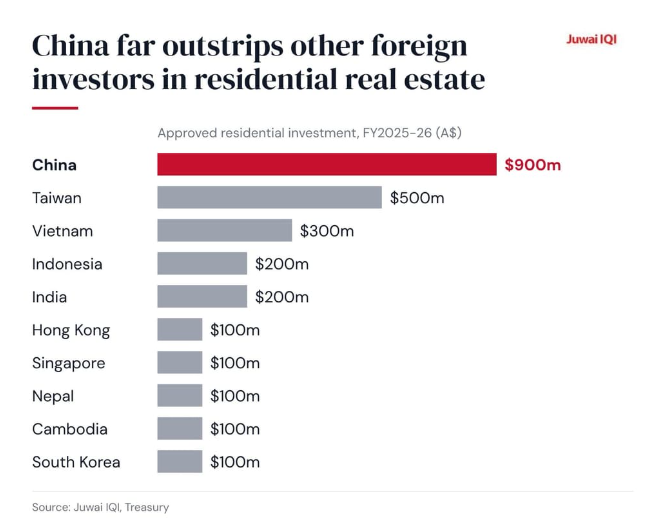
背景与关键数据
- 禁令内容：从 2025 年 4 月 1 日起两年，外国人（包括临时签证持有者）不能购买已建成的住宅（established dwellings）。新房、楼花、买地自建仍然可以，但需要经过外国投资审查委员会（FIRB）审批，缴纳高额申请费，空置还要交空置税。
- 数据口径：图里是 2025–26 财年获批的外国住宅投资额（澳元），是批准额，不是实际成交额。
- 留学生和房产：中国学生约 19.2 万，占国际学生的 23%。留学生本人或家庭在当地买房（自住或出租给同学），是外国住宅需求的重要来源。
- 澳洲的住房负担：帖 8 显示，澳洲买一套典型住房要 9.4 年全职工资（1985 年是 4.0 年）。住房负担是澳洲政治的核心议题，外国买家常被推到舆论焦点。
图片解读
- Juwai IQI 图：中国在澳洲住宅投资上远超其他外国投资者（2025–26 财年获批住宅投资，澳元）：中国大陆 9 亿，红色单独标出；台湾 5 亿；越南 3 亿；印尼、印度各 2 亿；香港、新加坡、尼泊尔、柬埔寨、韩国各 1 亿。中国大陆约是第二名台湾的 1.8 倍，差不多等于第二到第四名的总和。
为什么重要 / 对市场和经济的含义
- 中国家庭的海外配置需求：国内房价下行（帖 13、帖 19）的背景下，一部分家庭有配置海外资产的需求，但受外汇管制约束（个人每年 5 万美元的便利化购汇额度），大额海外置业并不容易，留学这类"实际需求"就成了主要通道。
- 对澳洲：外国买家占澳洲住宅交易的比例很小，禁令的政治意义大于经济意义。真正决定澳洲房价的是利率、移民带来的人口增长和住房供给。
- 教育出口：留学生在当地交学费、付生活费，在国际收支里记作"服务出口"。教育是澳洲最大的服务出口之一，所以澳洲政府在控制留学生人数和保护教育产业之间一直很纠结。
延伸知识
- 各国对外国买家的限制：新西兰 2018 年禁止大部分外国人买现房，加拿大 2023 年起禁止外国人购买住宅，新加坡对外国人买房征收 60% 的额外印花税。研究普遍发现，这类政策对整体房价影响有限，因为外国买家占比本来就小，房价主要由本地利率、收入和供给决定。
- "需求侧限制"与"供给侧"：限制外国买家属于压需求，效果往往短暂；提高住房供给（放宽规划、加快审批）才是解决住房负担的根本办法，但见效慢、政治阻力大。
帖 23 · CMF：4.6% 的增速里一半以上靠出口，就业—收入循环还没转起来（美西 10-26 15:07）
只看"净出口贡献 1.2 个百分点"会严重低估出口。把出口带动的投资和消费算进去，出口撑起了一半以上的增长；而内需这边，就业和收入的循环还很弱。读全文收起
帖子原文
（要点转述）CMF 认为，中国经济增速里可能有一半甚至一半以上由出口拉动，但就业—收入的良性循环还没形成，一遇外部冲击，经济就容易走弱。（两张截图为报告摘录。）#经济数据#
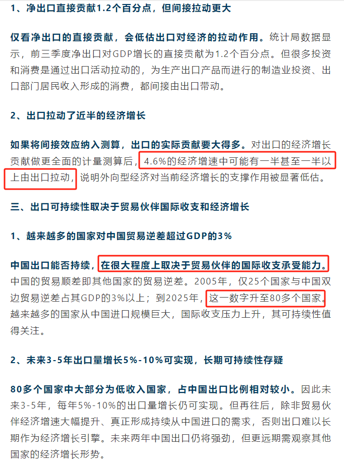
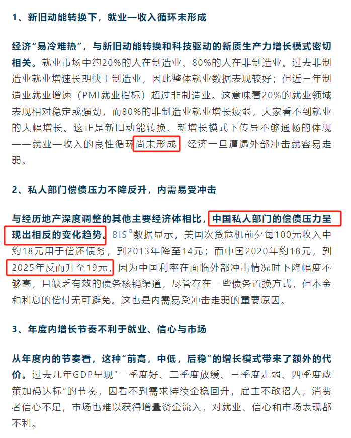
背景与关键数据
- CMF：中国宏观经济论坛，中国人民大学主办的宏观研究平台，定期发布季度报告。
- 直接贡献和间接贡献：支出法 GDP = 消费 + 投资 + 净出口。统计局口径下，前三季度净出口对 GDP 增长的直接贡献是 1.2 个百分点（约占 4.6% 的四分之一）。但工厂为出口订单扩产（制造业投资），出口企业的工人拿工资去消费，这些在统计上记在投资和消费里。把间接效应算进去，出口的贡献超过一半。
- 贸易伙伴的承受力：中国的顺差就是别国的逆差。2005 年只有 25 个国家对华双边逆差超过本国 GDP 的 3%，2025 年增加到 80 多个。别国的国际收支能不能撑住，决定中国出口能不能持续。
- 就业结构：制造业约占就业的 20%，非制造业约 80%。近三年制造业就业好于非制造业，但占大头的服务业就业疲弱，所以整体就业感受偏差。
- 私人部门偿债压力：按 BIS 数据，美国次贷危机前夕每 100 元收入里约有 18 元用来还本付息，2013 年降到 14 元；中国 2020 年约 18 元，2025 年反而升到 19 元。原因是利率下降幅度不够，也缺少有效的债务核销渠道。
- "前高、中低、后稳"的年内节奏：一季度好，二季度放缓，三季度走弱，四季度政策加码以完成目标。企业看不到需求持续回升，就不敢招人。
图片解读
- 图 1 报告摘录（出口部分）：小标题依次是：净出口直接贡献 1.2 个百分点但间接拉动更大；出口拉动了近半的经济增长；出口的可持续性取决于贸易伙伴的国际收支和经济增长；未来 3–5 年出口量增长 5%–10% 可以实现，长期可持续性存疑。三个红框：① 4.6% 的增速中可能一半甚至一半以上由出口拉动；② 出口能否持续，很大程度上取决于贸易伙伴的国际收支承受能力；③ 对华逆差超过 GDP 3% 的国家 2025 年升到 80 多个。报告还提到，这 80 多个国家大多是低收入国家，占中国出口比重较小，所以未来 3–5 年仍有增长空间，再往后就要看它们自己的经济能否起来。
- 图 2 报告摘录（内需部分）：三个小标题：新旧动能转换下，就业—收入循环未形成；私人部门偿债压力不降反升，内需容易受冲击；年度内的增长节奏不利于就业、信心与市场。红框：循环"尚未形成"；中国私人部门偿债压力呈现与美国相反的趋势；2025 年反升至 19 元。
为什么重要 / 对市场和经济的含义
- 最大的风险点：出口依赖加上外部壁垒上升（帖 15、帖 26 欧盟设限），是 2027 年中国增长的最大风险。
- 内需弱的根源不只是"消费不足"：地产财富缩水（帖 13），偿债负担重，服务业就业弱，年内增长节奏让企业不敢扩招，这些叠在一起。
- 政策含义：CMF 的结论指向更多直接作用于居民收入、帮私人部门减轻债务（核销、重组）的政策，而不只是加大投资。
延伸知识
- 乘数效应：1 元出口收入会通过工资、采购、再消费层层传递，最终带来超过 1 元的 GDP。所以"净出口的直接贡献"会低估出口的真实作用。
- 偿债比率（Debt Service Ratio，DSR）：BIS 用"本息支出 ÷ 收入"衡量私人部门的债务负担，比单看"债务 / GDP"更能反映压力，因为它把利率和期限也考虑进去了。研究发现，DSR 处在高位往往预示信贷收缩和增长放缓。
帖 24 · 摩根大通：美国是"韧性 + 高通胀"而不是衰退，预计 12 月再加息 25bp（美西 10-26 15:14）
JPM 认为美国经济扛得住加息，10 月暂停只是喘口气，12 月还要再加 25 个基点。全球市场眼下的几个关键词是：加息、法国财政压力、AI 周期风险，以及伊朗战争下的油价。读全文收起
帖子原文
（要点转述）摩根大通对美国经济的基本判断不是衰退，而是增长有韧性、通胀偏高，经济扛得住进一步收紧。它预计美联储 2026 年 10 月按兵不动，12 月再加息 25 个基点，把联邦基金利率目标区间提高到 4.00%–4.25%；还预计新西兰央行下次会议加息 25 个基点，市场已定价约 80% 的概率。附图是 JPM 全球市场周报的摘要页。#金融#
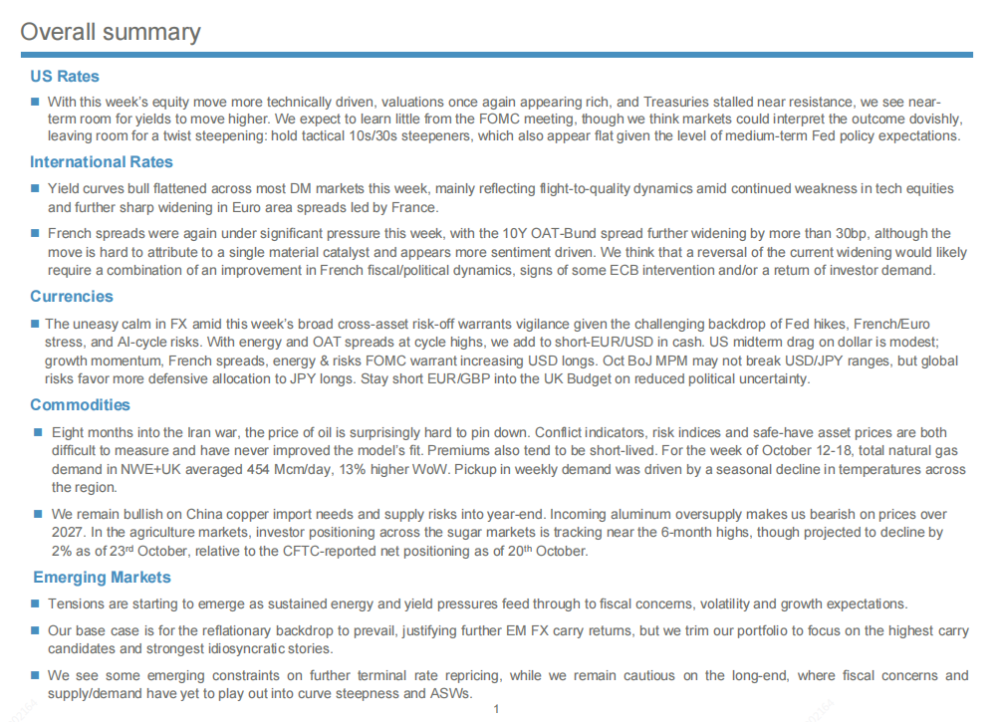
背景与关键数据
- 当前利率：联邦基金目标区间 3.75%–4.00%。帖 2 的 CME 表显示，10 月 28 日会议维持这一区间的概率约 90%，12 月加息到 4.00%–4.25% 的概率约 81%，和 JPM 的预测一致。
- 为什么还在加息：2026 年油价暴涨推高通胀（帖 16 的图里 2026 年 PCE 预测约 3.7%），美联储迎来 2023 年以来的首次加息（帖 20 大摩）。JPM 认为经济增长的韧性给了美联储继续收紧的空间。
- 不只美联储：新西兰央行（RBNZ）也被预期加息，全球主要央行整体偏紧。
- 基点（bp）：1 个基点 = 0.01%，25bp 就是 0.25 个百分点。
图片解读
- JPM 全球市场周报"总体摘要"页（英文），分五部分：
- 美国利率：本周股市波动偏技术性，估值再次显得偏贵，美债收益率停在阻力位附近，短期仍有上行空间。预计 FOMC 会议信息量不大，但市场可能做偏鸽派的解读，建议战术性持有 10 年 / 30 年期的"陡峭化"交易。
- 国际利率：发达市场收益率曲线普遍"牛平"（收益率下降、长端降得更多），反映科技股持续疲弱下的避险买债，以及以法国为首的欧元区利差大幅走阔。法德 10 年期利差一周走阔超过 30bp，很难归因于单一事件，更多由情绪驱动；要扭转，需要法国财政和政治改善、欧央行出手或投资者需求回归。
- 汇率：在美联储加息、法国和欧元区压力、AI 周期风险的背景下，外汇市场的平静让人不安。新增现金做空欧元 / 美元；美国中期选举对美元的拖累有限；全球风险偏向防御，看好日元多头；英国预算公布前继续做空欧元 / 英镑。
- 商品：伊朗战争进入第八个月，油价出奇地难以定价，冲突指标、风险指数和避险资产价格都难以衡量，风险溢价往往很短暂。10 月 12–18 日这一周，西北欧加英国的天然气需求平均每天 4.54 亿立方米，环比 +13%，主要因为气温季节性下降。年底前继续看多中国铜进口需求和供应风险；铝 2027 年供过于求，看空。
- 新兴市场：持续的能源和收益率压力开始传导到财政担忧、波动率和增长预期。基准仍是"再通胀"环境，继续做新兴市场货币套息，但把组合收缩到利差最高、自身故事最强的品种；长端因财政和供求问题仍要谨慎。
为什么重要 / 对市场和经济的含义
- "不衰退 + 高通胀 + 加息"对资产的影响：短端现金收益高（帖 7 表格里现金 BIL 年内 +2.9%），长债承压，成长股估值被压（帖 7 成长和价值的巨大分化），黄金被实际利率压制（帖 16）。
- 法国利差是欧洲的隐患：财政问题加政治不稳，如果利差持续走阔，可能需要欧央行动用 TPI（传导保护工具）这类机制干预。
- 油价"难以定价"：这正是帖 27 里油价在战火和外交消息之间来回摇摆的原因。
延伸知识
- 收益率曲线的四种形态：长短端利差扩大叫"陡峭化"，缩小叫"平坦化"。"牛平"是收益率整体下降且长端降得更多，通常对应避险或衰退担忧；"熊陡"是收益率整体上升且长端升得更多，通常对应通胀或财政担忧。
- 套息交易（Carry Trade）：借入低利率货币（如日元），投资高利率货币（如墨西哥比索、巴西雷亚尔），赚利差。平时稳定赚钱，风险事件中汇率剧烈波动时可能一次亏掉很久的收益，常被形容为"在压路机前捡硬币"。
帖 25 · 美银：中国商业地产租金继续下跌，供给压力拖累公募 REITs 估值（美西 10-26 15:23）
中国写字楼、仓库、商场的租金都在跌。C-REITs 的分红虽然还在增长，价格却在下跌，隐含资本化率升到 5%，市场在为"未来租金更低、供给更多"提前定价。读全文收起
帖子原文
（要点转述）美银指出，除了住宅，中国写字楼、购物中心、物流仓储的租金也在持续下降：写字楼空置率高；物流仓储租金跌得最快，空置率同比大幅上升；购物中心相对稳定，但租金也在降。公募 REITs 出现一个值得研究的现象：底层资产运营大体稳定，二级市场价格却在下跌，说明投资者在重估未来租金能否维持，以及市场要消化多少新增资产。商业 REITs 年初至今 -9%，商业地产的调整可能比住宅更难靠短期刺激扭转。#金融#
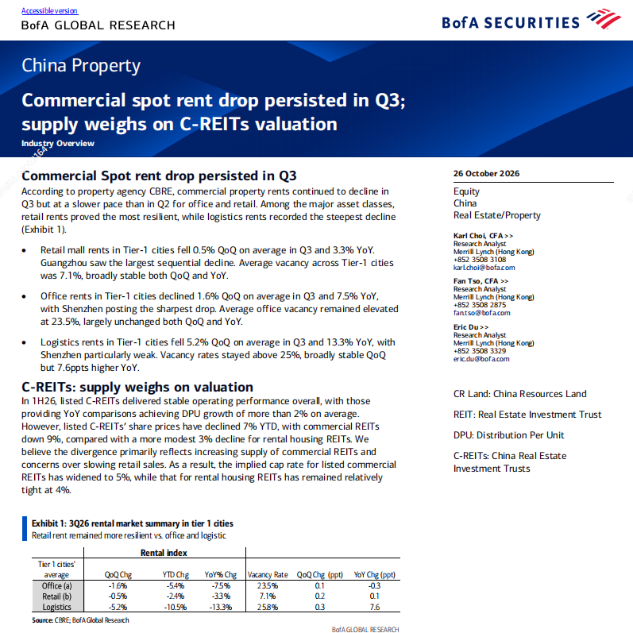
背景与关键数据
- C-REITs：中国公募不动产投资信托基金，2021 年起步，把产业园、仓储物流、商场、保障性租赁住房等资产打包上市，投资者买份额、分享租金。
- DPU（每份额派息）：上半年同比增长 2% 以上，说明底层资产的经营没出大问题。
- 资本化率（Cap Rate）= 年净运营收入 ÷ 资产价格，相当于 REIT 的"收益率"。资本化率升到 5%，等于价格下跌了。租赁住房 REITs 维持在约 4%，相对抗跌。
- 为什么运营稳、价格跌：投资者买的是未来。更多 REITs 上市会稀释需求（供给压力），租金又有下行预期，价格就先跌了。
图片解读
- 美银报告首页（2026-10-26，数据来自 CBRE）：三季度一线城市商业地产租金继续下跌，但比二季度慢。分类别看：
- 商场：租金环比 -0.5%、同比 -3.3%，广州环比跌得最多，平均空置率 7.1%，基本稳定。
- 写字楼：租金环比 -1.6%、同比 -7.5%，深圳跌得最多，平均空置率 23.5%，环比、同比都变化不大。
- 物流：租金环比 -5.2%、同比 -13.3%，深圳尤其疲弱，空置率 25.8%，环比持平但同比上升 7.6 个百分点。
- C-REITs：上半年有同比数据的 REITs 平均 DPU 增长 2% 以上；但上市 C-REITs 价格年内 -7%，其中商业 REITs -9%、租赁住房 REITs -3%。美银认为分化主要因为商业 REITs 供给增加、零售销售放缓；商业 REITs 隐含资本化率扩大到 5%，租赁住房 REITs 维持在 4% 左右。
- Exhibit 1 表：年初至今租金，写字楼 -5.4%，零售 -2.4%，物流 -10.5%。
为什么重要 / 对市场和经济的含义
- 写字楼空置率 23.5%：将近四分之一的写字楼空着，反映企业扩张意愿弱、白领就业弱（呼应帖 23）。
- 物流租金暴跌：电商增速放缓，前几年仓库又大量新建，供给过剩。
- 商业地产比住宅更难刺激：住宅可以靠降首付、降利率刺激需求，商业地产的需求来自企业经营，政策很难直接"变"出租户。
- 对 REITs 投资者：资本化率的上升已经反映了不少悲观预期，但市场仍在要求更高的补偿，说明对租金下行和供给的担忧很重。
延伸知识
- 资本化率与利率的关系：资本化率可以粗略拆成"无风险利率 + 风险溢价 − 租金增长预期"。租金增长预期下降，资本化率就得上升，价格随之下跌，哪怕今天的租金一分没少。这就是"运营稳、价格跌"的数学原因。
- 空置率的参照：美国疫情后因为远程办公，写字楼空置率升到 20% 左右，引发了对商业地产贷款的担忧。中国一线城市写字楼空置率 23.5%，已经高于这个水平。
帖 26 · 彭博独家：欧盟拟最早 2027 年一季度对华化工、家具、机械动用保障措施（美西 10-26 15:44）
帖 15 花旗的预判当天就有了具体消息：欧盟要用"保障措施"这个工具，对中国的化工、家具、机械设配额或加关税，最早明年一季度出台。读全文收起
帖子原文
（要点转述）彭博报道，欧盟计划动用贸易保障措施，限制来自中国多个行业的进口，包括化工产品、家具和机械设备，形式可能是进口配额或加征关税，最早 2027 年一季度公布。消息传出后，欧洲工业股普遍上涨。#政策分析#
背景与关键数据
- 逆差规模：彭博 AI 摘要提到，欧盟去年对华贸易逆差达 3600 亿欧元。
- 欧委会想要的效果：给本土产业减压，同时尽量不招致北京报复、不引发贸易战。所以它选了保障措施：这个工具对所有来源国适用，在 WTO 框架下合法，不需要点名指控中国补贴或倾销。
- 保障措施和反倾销、反补贴的区别：反倾销要证明对方低于正常价值销售，反补贴要证明有政府补贴，都针对特定国家。保障措施针对的是"进口激增造成损害"，名义上对所有出口国适用，但实际影响最大的是份额最大的中国。按 WTO 规则，保障措施一般最长 4 年，可延长到 8 年，期间要逐步放宽。
- 先例：欧盟从 2018 年起对钢铁实施保障措施（配额加超额关税），起因是美国 232 关税导致大量钢材转向欧洲。
图片解读
- 彭博报道截图：红色 EXCLUSIVE（独家）标签，标题是"欧盟计划在 2027 年初对中国实施更多进口限制"，作者 Alberto Nardelli，发布于 2026 年 10 月 26 日 21:31（GMT+13），配图是一艘集装箱货轮，图注说措施可能是进口配额。彭博 AI 摘要三点：① 欧盟计划用保障措施削减来自中国的化工、家具、机械等行业的进口；② 据知情人士，措施可能是进口上限或关税，最早 2027 年一季度提出；③ 欧委会希望在不招致北京报复、不引发贸易战的前提下提振本土产业，缩小去年达 3600 亿欧元的对华逆差。
为什么重要 / 对市场和经济的含义
- 打在中国出口增长最快的地方：帖 15 显示，中国化工品的全球出口份额从约 8% 升到 18%，通用机械约 24%。这正是欧盟要限制的领域。
- 中国可能怎么回应：过去两年用过的工具包括关键矿产和稀土出口管制、对欧洲猪肉、乳制品、白兰地发起调查等。中欧之间"有限对抗、边打边谈"的可能性较大。
- 对市场：欧洲工业股上涨；中国化工、家具出口商承压；中国企业可能加快在欧洲本地建厂（电动车、电池行业已经在这么做），用"本地生产"绕开贸易壁垒。
延伸知识
- 贸易转移：美国对中国加关税后，中国商品会更多流向欧洲等第三方市场，这叫贸易转移。欧盟这次的担忧之一，就是"美国把门关上后，货都涌进了欧洲"。
- 关税和配额的区别：关税抬高价格但不限数量，政府能拿到税收；配额直接限制数量，拿到配额的进口商能赚到"配额租金"（国内外差价）。配额对国内产业的保护更确定，对市场的扭曲也更大。
帖 27 · 彭博：外交斡旋带来降温希望，油价连跌两日；俄罗斯转向非洲征兵（美西 10-26 15:48）
美伊战争进入第八个月，外交斡旋让油价连跌两天（WTI 约 101 美元、布伦特 116 美元下方），但中东多条战线仍在冒烟。布伦特今年已涨近九成，油价仍是全球通胀和央行加息的最大变量。读全文收起
帖子原文
（要点转述）随着外交斡旋加码，市场对美伊战争避免进一步大规模升级的希望上升，国际油价连续第二个交易日下跌。据伊朗国家广播电视台（IRIB），沙特、巴基斯坦和土耳其的高级官员周一到德黑兰磋商，同意继续谈判；普京将在周二莫斯科能源峰会期间分别会见伊朗总统佩泽希齐扬和卡塔尔埃米尔塔米姆。但中东风险依然很高：沙特领导的联军称在利雅得摧毁三架无人机，黎巴嫩真主党在伊朗资助下准备新一轮地区战争，也门胡塞武装此前已经卷入冲突。因战争扰乱能源运输、胡塞卷入、沙特反复遇袭，布伦特今年累计上涨近 90%。另一则消息：俄罗斯在增加从非洲招募士兵，以缓解兵员短缺，前九个月重点是津巴布韦、布隆迪和塞拉利昂；肯尼亚和南非此前曾试图阻止本国男性赴俄参战。#金融#
背景与关键数据
- 价格：据彭博截图，WTI 前一交易日跌 1.5% 后继续跌向每桶 101 美元，布伦特收在 116 美元下方。大摩表格（帖 21）里 10 月 23 日布伦特是 117 美元。
- 斡旋方：沙特、巴基斯坦、土耳其的高官去了德黑兰；俄罗斯总统普京同时会见伊朗总统和卡塔尔埃米尔（卡塔尔是液化天然气大国，也是中东的传统中间人）。
- 关键通道：霍尔木兹海峡承担全球约五分之一的石油海运；红海和曼德海峡则受胡塞武装袭击航运的威胁。
- 布伦特和 WTI 的价差约 15 美元，远高于正常的 3–5 美元。中东供应风险对国际油价（布伦特）的冲击更大，美国本土原油（WTI）相对受保护。
- 俄罗斯从非洲征兵：反映俄军兵员紧张。高油价对俄罗斯财政有利，能给战争提供经费。
图片解读
- 彭博报道截图：标题"外交带来中东局势降温希望，油价下跌"，作者 Kanoko Matsuyama，发布于 2026 年 10 月 27 日 11:03（GMT+13）。顶部视频是彭博周末节目，彭博经济研究的防务主管和中东记者讨论美国和以色列的选举会如何影响伊朗战争的下一阶段。正文前三段：油价连跌第二天；WTI 前一交易日跌 1.5% 后跌向 101 美元，布伦特收在 116 美元下方；沙特、巴基斯坦、土耳其高官赴德黑兰会谈并同意继续谈判；普京周二在莫斯科能源峰会期间会见佩泽希齐扬和卡塔尔埃米尔。
为什么重要 / 对市场和经济的含义
- 油价是 2026 年全球宏观的"总开关"：通胀（帖 16 的 PCE 预测）、美联储加息（帖 2、帖 24）、债券收益率、新兴市场财政（帖 24）都和它连在一起。
- 外交消息只能让油价短暂降温：JPM（帖 24）说风险溢价往往很短暂。地缘风险溢价随消息快速进出，交易上波动极大。
- 大摩（帖 21）预计 2027 年二季度布伦特降到 95 美元，前提是冲突不再升级。今天的斡旋消息算是朝这个方向迈了一小步。
延伸知识
- 地缘风险溢价：油价可以拆成"供需决定的基本面价格"加上"对供应中断担忧的风险溢价"。战争消息让溢价飙升，和谈消息让溢价回落，而基本面（库存、产量）变化要慢得多。
- 1970 年代石油危机：1973 年阿拉伯石油禁运和 1979 年伊朗革命，两次让油价翻了几倍，引发西方"滞胀"（高通胀加衰退）。美联储主席沃尔克最终把利率加到接近 20% 才压住通胀。今天"油价暴涨 + 美联储加息"的组合，常被拿来和那个年代比较。
帖 28 · 低生育率的"复利效应"：生育率 1.0，100 年后一代人只剩不到十分之一（美西 10-26 16:01）
生育率 1.14 和 0.70 看着只差 0.44，但 100 年后，一代人的规模分别只剩起点的 13% 和 2.6%，相差 5 倍。读全文收起
帖子原文
（要点转述）Jason 提醒：低生育率的影响带有复利效应，生育率越低，一代比一代缩得越快；生育率之间看似很小的差距，累积几代之后会变成非常大的代际规模差距。#人口#
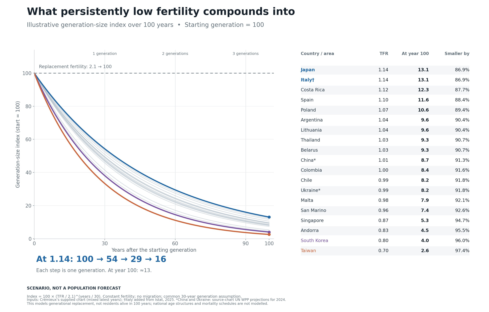
背景与关键数据
- 更替水平 2.1：平均每对父母生 2.1 个孩子，下一代人数才能不变（多出的 0.1 用来弥补夭折和男女比例不均）。
- 图中的公式：指数 = 100 × (TFR ÷ 2.1)^(年数 ÷ 30)。每 30 年一代，每一代的人数乘以 TFR ÷ 2.1。TFR 为 1.14 时每代乘以 0.54：100 → 54 → 29 → 16。
- 中国：图中 TFR 用的是联合国《世界人口展望》对 2024 年的估计值 1.01，100 年后指数约 8.7，缩小 91.3%。
- 这是情景，不是预测：图假设生育率恒定、没有移民，也不考虑年龄结构和死亡率。现实中总人口下降会慢一些（寿命延长，老人还在），但"每一代新生儿"的规模就是按这个速度缩的。
图片解读
- 左图：横轴是从起始一代开始的年数（0–100 年，标出了第 1、2、3 代），纵轴是代际规模指数（起点 = 100）。顶部虚线是更替水平 2.1，一直保持 100。蓝线是日本（1.14），紫线是韩国（0.80），橙线是台湾（0.70），灰线是其他国家和地区。所有曲线都在快速下滑，越到后面差距越大。左下角大字：生育率 1.14 时，100 → 54 → 29 → 16。
- 右表：各国 TFR 和 100 年后的指数。日本、意大利 1.14 → 13.1；哥斯达黎加 1.12 → 12.3；西班牙 1.10 → 11.6；波兰 1.07 → 10.6；阿根廷、立陶宛 1.04 → 9.6；泰国、白俄罗斯 1.03 → 9.3；中国 1.01 → 8.7；哥伦比亚 1.00 → 8.4；智利、乌克兰 0.99 → 8.2；马耳他 0.98 → 7.9；圣马力诺 0.96 → 7.4；新加坡 0.87 → 5.3；安道尔 0.83 → 4.5；韩国 0.80 → 4.0；台湾 0.70 → 2.6。
为什么重要 / 对市场和经济的含义
- 和昨晚的几帖连起来看：帖 4（年轻人零生育意愿 32%）、帖 11（2026 年出生人口 750–800 万），再加上这张图：低生育已经不是暂时现象，而是会一代代放大的结构变化。
- 经济含义：劳动力减少，养老金抚养比恶化（呼应帖 29 的养老金替代率），住房的长期需求下降（呼应帖 13 高盛对住宅用地成交量下降 90% 以上的预测），潜在增长率下降。
- 政策含义：正因为是复利，生育率的小幅回升（比如从 1.0 升到 1.3）长期影响会非常大。
延伸知识
- "减半时间"：复利增长时可以用 72 法则估算翻倍时间；负增长时同样能算减半时间。TFR 为 1.0 时，每 30 年一代缩小约 52%，相当于大约每 28 年新生儿规模减半。
- 人口惯性：即使生育率突然回到更替水平，因为育龄人口已经变少，出生人口还会继续下降一段时间。反过来，生育率早已跌破更替水平的国家，总人口往往要过二三十年才开始下降：中国的生育率在 1990 年代就低于 2.1，总人口到 2022 年才开始负增长。
帖 29 · 中央党校删除了一篇谈养老金替代率的文章（美西 10-26 18:06）
一篇讨论养老金替代率的文章被发布方删除，说明这个话题很敏感。养老金够不够用，关系到上亿人的切身利益，也关系到财政能不能持续。读全文收起
帖子原文
（要点转述）Jason 只写了一句：中央党校把那篇讲养老金替代率的文章删了。附一张"内容已删除"的截图。
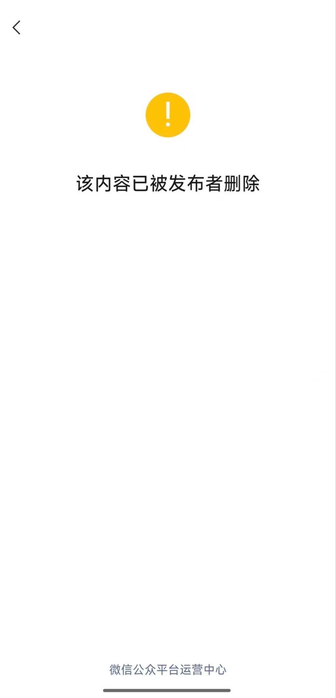
背景与关键数据
- 养老金替代率 = 退休后领到的养老金 ÷ 退休前的工资（或社会平均工资）。替代率 40% 的意思是：退休前月薪 1 万元，退休后每月领 4000 元。
- 国际参照：国际劳工组织《社会保障最低标准公约》（第 102 号）把 40% 作为养老金替代率的最低标准；不少研究把 70% 左右当作维持退休前生活水平的参考线。
- 中国的情况：城镇职工基本养老金相对社会平均工资的替代率比 1990 年代末明显下降，常见估算在 40%–50% 区间；城乡居民基础养老金每月平均只有两百元上下（近年有所上调），替代率更低。
- 我们不知道被删文章的具体内容，截图只显示内容已被删除，以上背景是帮助理解这个话题。
图片解读
- 手机微信截图：黄色感叹号图标，文字"该内容已被发布者删除"，底部是"微信公众平台运营中心"。这个提示通常表示是发布方（这里是中央党校相关的公众号）主动删除；平台以违规为由屏蔽时，提示语一般不一样。
为什么重要 / 对市场和经济的含义
- 养老金是财政压力的"长期账单"：老龄化（帖 28）意味着缴费的人变少、领钱的人变多。讨论替代率，本质是在讨论"未来养老金会不会相对缩水"。
- 敏感在哪里：替代率下降意味着退休人员的相对生活水平下降。2025 年起实施的渐进式延迟法定退休年龄、个人养老金制度的推广，都和这个问题直接相关。
- 对个人的含义：第一支柱（基本养老金）的替代率有限，这正是第二支柱（企业年金）、第三支柱（个人养老金）存在的意义。
延伸知识
- 三支柱养老体系：第一支柱是政府主导的基本养老保险，以现收现付为主；第二支柱是企业年金和职业年金；第三支柱是个人自愿储蓄（如中国的个人养老金账户、美国的 IRA）。老龄化越严重，越需要后两根支柱补位。
- 现收现付和积累制：现收现付是"今天的年轻人缴费养今天的老人"，依赖人口结构；积累制是"自己存钱养自己"，依赖投资回报。生育率下降对现收现付的冲击最大，帖 28 的"复利效应"最终会落在养老金上。
帖 30 · Jason 自制图：纪检处分人数与财政赤字同步攀升（美西 10-26 18:17）
Jason 把"1–9 月纪检处分人数"和"1–9 月全国财政赤字"画在同一张图上，两条线十年来同步走高，暗示财政越紧，纪律整顿的力度越大。读全文收起
帖子原文
（要点转述）Jason：2016 年以来全国已累计处分 713 万人，并附了一张自制图表。#自制图表#
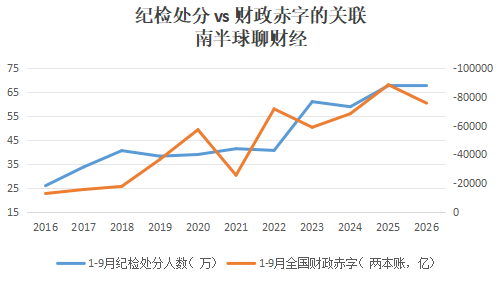
背景与关键数据
- 纪检处分：中央纪委国家监委每季度公布全国纪检监察机关立案和处分的人数，处分包括党纪处分和政务处分。
- "两本账"赤字：一般公共预算加政府性基金预算的收支差额。政府性基金预算的主要收入是土地出让金，所以帖 1、帖 13 讲的卖地收入下滑，会直接扩大这本账的缺口。
- 713 万人：Jason 给的 2016 年以来累计数。2026 年前九个月约 68 万人，按这个速度全年接近 90 万人。
图片解读
- "纪检处分 vs 财政赤字的关联"（南半球聊财经自制）：横轴是 2016–2026 年。
- 蓝线（左轴，万人）：1–9 月纪检处分人数。2016 年约 26 万，2018 年升到约 41 万，2019–2022 年在 38 万–42 万之间徘徊，2023 年跳到约 61 万，2024 年约 59 万，2025、2026 年都约 68 万。
- 橙线（右轴，亿元）：1–9 月全国两本账财政赤字。右轴是倒过来的，越往上赤字越大。2016 年约 1.3 万亿元，2020 年扩大到约 5.7 万亿，2021 年收窄到约 2.6 万亿，2022 年约 7.1 万亿，2023 年约 5.9 万亿，2024 年约 6.7 万亿，2025 年约 8.8 万亿，2026 年约 7.5 万亿。
- 把右轴倒置，是为了让"赤字变大"和"处分变多"在图上同向，视觉上更容易看出两者的联动。
为什么重要 / 对市场和经济的含义
- Jason 可能想表达的：财政压力越大，越需要"向内挖潜"：整顿纪律，追缴违纪资金，压缩"三公"开支和灰色支出，把有限的财政资源管得更紧。这和帖 31 长文讲的"钱的流动被设计、被支配"是同一个思路。
- 读这张图要审慎：两条线都随时间上升，同一趋势不等于因果。2021 年赤字大幅收窄，处分人数并没有减少；2023 年处分人数大幅跳升，赤字反而略有收窄。还有其他解释，比如 2018 年国家监察体制改革扩大了监察对象。
- 对理解中国宏观：财政紧张时期，政府倾向于节流、加强对资金流向的管控，这会影响地方政府行为（招商引资、补贴发放），也会影响公职人员相关的消费（如高端餐饮、白酒）。
延伸知识
- 伪相关（Spurious Correlation）：两个都随时间增长的序列，几乎总会显得高度相关，就像冰淇淋销量和溺水人数都在夏天上升。检验方法之一是看"每年的变化量"是否同步，或者找出共同的驱动因素。
- 国家监察体制改革：2018 年修宪设立国家监察委员会，和中央纪委合署办公，监察对象从党员扩大到所有行使公权力的公职人员。这是 2018 年以后处分人数台阶式上升的制度原因之一。
帖 31 · Jason 长文《钱的流动，楚门的世界》（美西 10-26 19:52）
Jason 用"微缩景观里的水线"比喻资金流动：宏观层面不需要直接拿走你的钱，只要设计好叙事、管制和相对收益，钱就会"自愿"流向指定的口袋。读全文收起
帖子原文
（要点转述）本帖是知识星球长文（article），已读取全文，以下按段落转述：
- Jason 周末逛集市，看到一个卖"微缩景观"的摊位。摊主正教一对老夫妻布"水线"：水从哪个口进来、怎么藏起来、在哪里露出来变成"河"、再从哪个口流走，水的流动完全是设计好的。Jason 对摊主说，这水线就像"金流"。
- 他把这个联想接到自己以前写的《工资回收计划》和《聊聊钱的支配权和所有权》：想拿到别人的钱，偷抢骗太直白、成本太高；更好的办法是"远程支配"，所有权暂时留在对方手里，但无论对方怎么选，钱最终都沿着设定好的路径回到自己口袋。
- 他重提某地产商的故事：公司资金紧张，先照常发工资，同时以"回馈员工"为名推出高息理财；员工不仅把工资、还把积蓄和亲友的钱都投回公司；等压力显现，再下调约定利率，钱已经在公司账上，员工也没办法。他暗示自己说的不只是某一家地产商。
- 推到宏观层面：叙事引导、管制封路、相对净收益，本质上都是在造一个巨大的"口袋"，看似机会很多，实则路径早已设定。为防资金脱轨，还可以再嫁接一个更大的景观：楚门走出了楚门的世界，却发现外面是一个更大的楚门的世界。
- 支付数字化以后，这种支配会更容易，个人对资金的支配权可能被进一步让渡。他也承认有好处：灰色地带减少，财政或许能保持表面的可持续。结尾他问：一个人失去的和得到的，一定相等吗？并自称"随便扯扯"。
（本帖无图片。）
背景与关键数据
- 楚门的世界：1998 年的电影。主角楚门从出生起就生活在一个巨大的摄影棚里，身边的一切都是安排好的。Jason 用它比喻"看似自由选择，实则路径被设计"。
- 所有权和支配权：钱在你的账户里，这是所有权；但你能把它投到哪里、拿到什么回报，这是支配权，后者可能受到各种限制和引导。
- 金融抑制（Financial Repression）：经济学家麦金农和肖在 1973 年提出这个概念，后来莱因哈特（Carmen Reinhart）用它解释二战后欧美政府如何化解高债务：压低利率、限制资本外流、要求金融机构持有国债，让储户拿到低于通胀的回报，等于悄悄把居民财富转给了借款方（往往是政府）。Jason 说的"管制封路 + 相对净收益"，机制上和金融抑制很接近。
- 地产商理财的现实对照：2021 年前后多家房企旗下的理财产品出现兑付危机，公开报道显示其中不少员工曾被鼓励认购（如恒大财富）。Jason 没有点名，但故事的结构是一样的。
- 数字化与可编程货币：数字支付和数字货币让资金流向可追踪；技术上，"可编程货币"还可以设定资金的用途、期限等条件。这是 Jason 担心支配权被"进一步让渡"的技术背景。
为什么重要 / 对市场和经济的含义
- 今天的"第二条线"：这篇长文和帖 29（养老金替代率文章被删）、帖 30（处分人数 vs 赤字）一起，构成 Jason 今天的另一条主线：财政压力下，资金如何被引导和管控。
- 用"水线"视角理解资产价格：在资本账户不完全开放、利率受引导的经济体里，居民储蓄流向存款、理财、房地产、股市还是国债，很大程度上由政策塑造。哪些渠道被打开、哪些被关上，常常比估值本身更能解释一类资产的涨跌。比如过去资金被引入楼市，近年"资本市场"叙事又试图把资金引向股市。
- Jason 结尾的问题指向"代价"：收益是灰色地带减少、财政表面可持续；成本是个人对资金的支配权下降、实际回报可能被压低。这两边怎么权衡，没有标准答案。
延伸知识
- 不可能三角（三元悖论）：一个国家不能同时拥有资本自由流动、稳定汇率和独立的货币政策，只能三选二。中国保留一定的资本管制，从而在稳定汇率的同时保有货币政策的自主权。这也是"水线"能被设计的制度前提：水管有闸门，水才能按设计流。
- 金融抑制的历史效果：1945–1980 年，美英等国靠低利率加通胀，把政府债务占 GDP 的比例从 100% 以上压到了很低的水平。研究估算，这种"隐性税"在一些年份相当于每年 GDP 的几个百分点。它不需要立法加税，却实实在在地把储户的购买力转移走了。
今日全图索引
| 帖 1 | 10-25 12:16 | 高盛：中国 2026 年广义财政赤字下调至 GDP 10% | #TAX# | post1_img1.png | | 帖 2 | 10-25 12:41 | 彭博：10 月加息概率被官员讲话压到 15% 以下 | #金融# | post2_img1.png、post2_img2.png | | 帖 3 | 10-25 12:46 | zerohedge：巴西决选前博索纳罗领先缩小 | #其他国家经济# | post3_img1.png、post3_img2.png | | 帖 4 | 10-25 13:00 | 论文：中国年轻人零生育意愿升至 32% | #论文或书籍推荐# | post4_img1.png、post4_img2.png | | 帖 5 | 10-25 13:10 | OECD 论文：生育、就业与家庭政策 | #论文或书籍推荐# | post5_img1.png（附 PDF） | | 帖 6 | 10-25 13:20 | Revelio Labs：全球呼叫中心就业开始萎缩 | #职业# | post6_img1.png、post6_img2.png | | 帖 7 | 10-25 13:21 | Bilello：美元资产历年收益，2026 年商品 +52.5% | #金融# | post7_img1.png | | 帖 8 | 10-25 13:24 | 买房需要多少年工资（六地 1985–2025） | #房价# | post8_img1.png | | 帖 9 | 10-25 13:28 | GMI：日本投资者连续 5 周净卖出海外债券 | #金融# | post9_img1.png | | 帖 10 | 10-25 13:38 | 麦肯锡：2035 年美国 1100 万人需转行 | #职业# | post10_img1.png（附 PDF） | | 帖 11 | 10-25 14:11 | 何亚福：2026 年出生人口三种情景 | #人口# | post11_img1.png | | 帖 12 | 10-25 20:17 | 彭博：卢拉逆转胜选，巴西市场迎波动 | #其他国家经济# | post12_img1.png | | 帖 13 | 10-26 13:40 | 高盛：中国地产下行第六年，全国房价 2030 年触底 | #房价# | post13_img1.png、post13_img2.png | | 帖 14 | 10-26 13:50 | 中金：AI 对传统部门的挤出效应 | #经济数据# | post14_img1.png、post14_img2.png、post14_img3.png、post14_img4.png、post14_img5.png | | 帖 15 | 10-26 14:05 | 花旗：中欧贸易站在十字路口，2027 年"保四" | #政策分析# | post15_img1.png、post15_img2.png | | 帖 16 | 10-26 14:11 | 国联民生：金价跌破 4000，反弹上限 4300–4500 | #金融# | post16_img1.png、post16_img2.png | | 帖 17 | 10-26 14:21 | 摩根大通：AI 回报焦虑与日股两阶段策略 | #股市# | post17_img1.png | | 帖 18 | 10-26 14:25 | 中金：A 股港股年内转负，全球大类资产表现 | #金融# | post18_img1.png | | 帖 19 | 10-26 14:28 | 中指院：租金较高点跌 10.9%，深圳租售比 1.75% | #房价# | post19_img1.png、post19_img2.png | | 帖 20 | 10-26 14:42 | 摩根士丹利：黄金避险的新逻辑，目标 5000 美元 | #金融# | post20_img1.png、post20_img2.png（附 PDF） | | 帖 21 | 10-26 14:55 | 摩根士丹利：跨资产展望（2027 年二季度） | #金融# | post21_img1.png（附 PDF） | | 帖 22 | 10-26 14:58 | 澳洲：禁购令下中国大陆仍是最大外国住宅投资者 | #其他国家经济# | post22_img1.png | | 帖 23 | 10-26 15:07 | CMF：一半以上增长靠出口，内需循环未形成 | #经济数据# | post23_img1.png、post23_img2.png | | 帖 24 | 10-26 15:14 | 摩根大通：美国不衰退，12 月再加息 25bp | #金融# | post24_img1.png | | 帖 25 | 10-26 15:23 | 美银：中国商业地产租金下跌，C-REITs 承压 | #金融# | post25_img1.png | | 帖 26 | 10-26 15:44 | 彭博独家：欧盟拟 2027 年一季度对华动用保障措施 | #政策分析# | post26_img1.png | | 帖 27 | 10-26 15:48 | 彭博：外交斡旋，油价连跌两日 | #金融# | post27_img1.png | | 帖 28 | 10-26 16:01 | 低生育率的复利效应 | #人口# | post28_img1.png | | 帖 29 | 10-26 18:06 | 中央党校删除养老金替代率文章 | （无标签） | post29_img1.jpg | | 帖 30 | 10-26 18:17 | 自制图：纪检处分人数 vs 财政赤字 | #自制图表# | post30_img1.png | | 帖 31 | 10-26 19:52 | 长文：钱的流动，楚门的世界 | （无标签，长文） | （无图） |